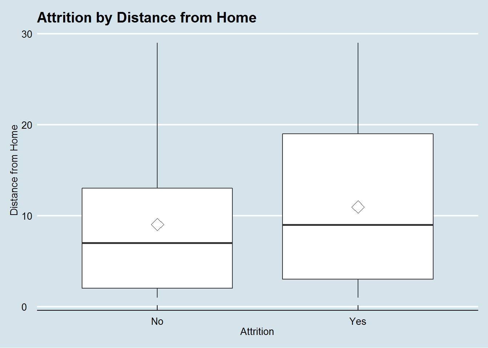
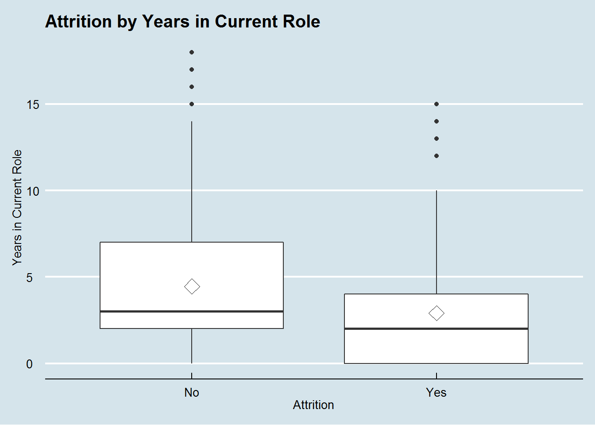
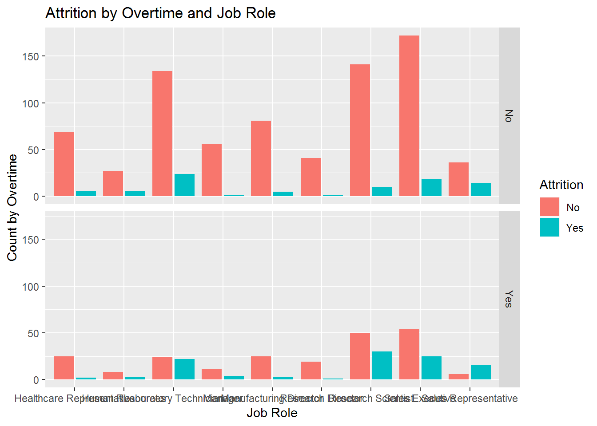
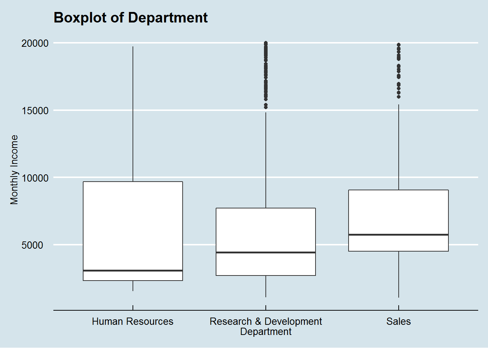
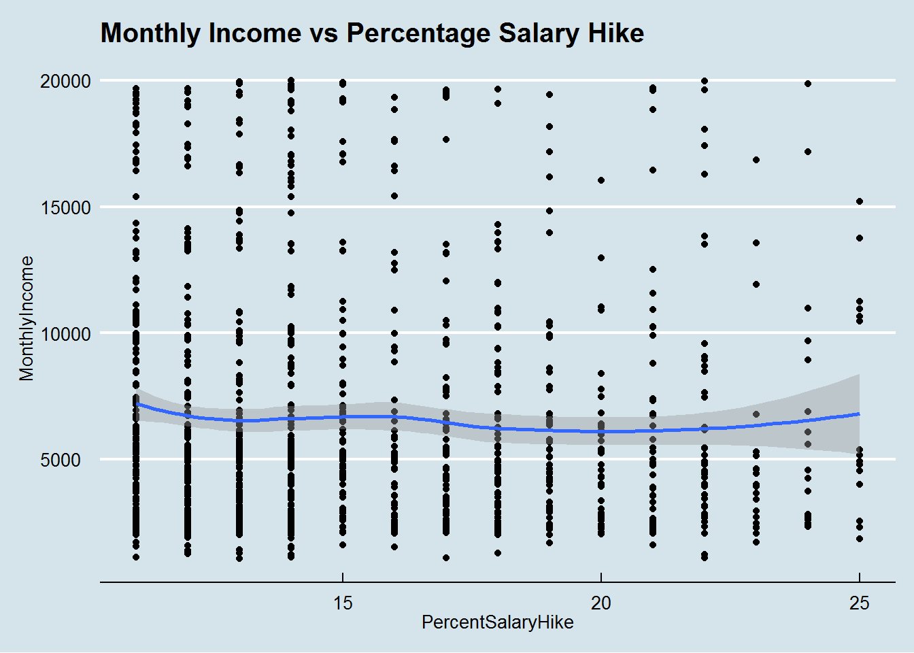
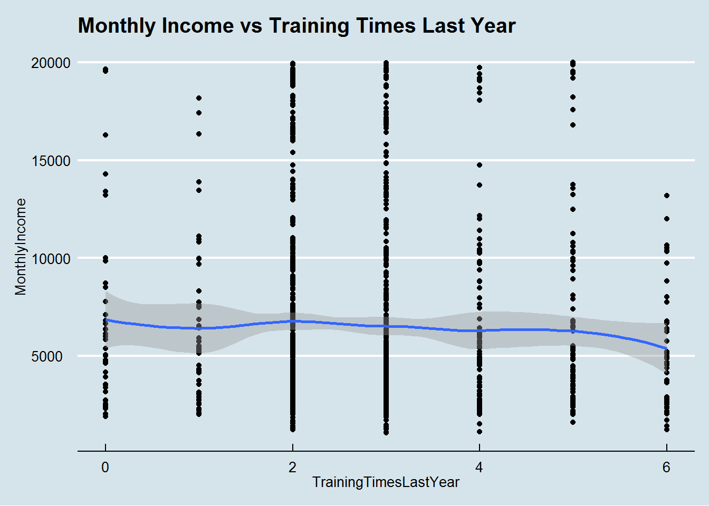
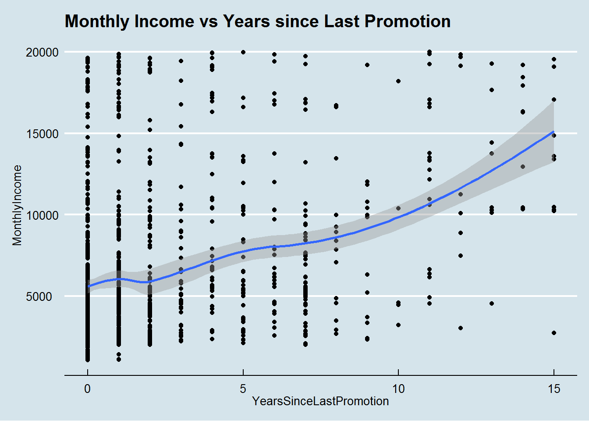
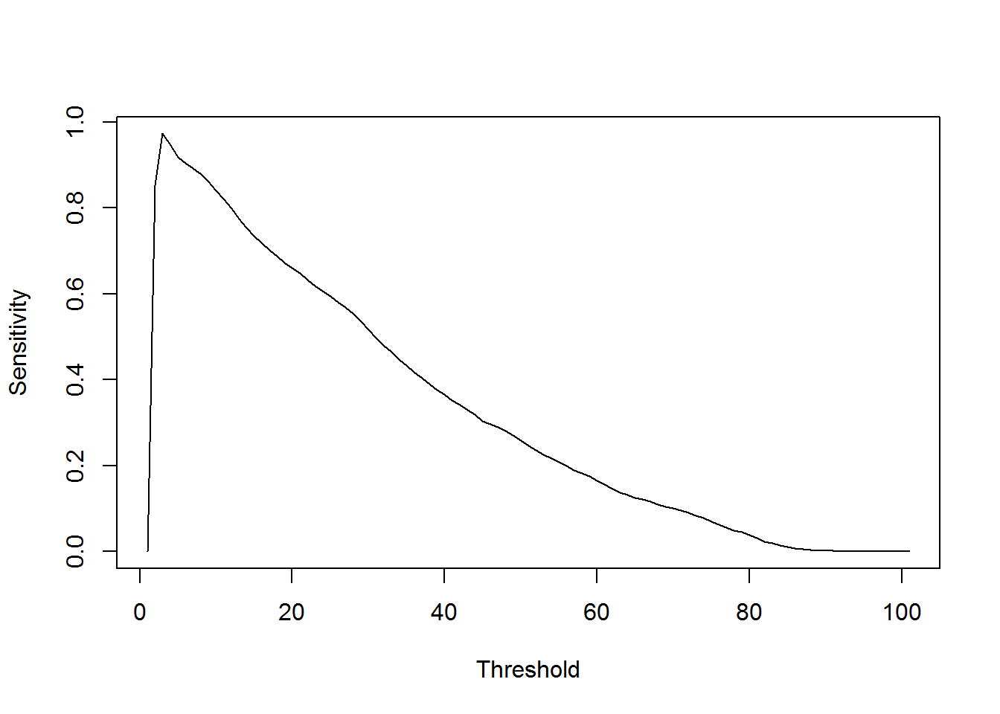

Case Study 2 - Employee Attrition
Jon Paugh
11/18/2019
Doing Data Science - Case Study 2
Employee Attribution
Original dataset https://www.kaggle.com/pavansubhasht/ibm-hr-analytics-attrition-dataset
Goal - using the subset of data provided for training, predict the salaries (MonthlyIncome) and Attribution (Attrition = Yes/No) for the two separate validation datasets.
Must use either KNN or Naive Bayes, but can use other techniques too
Youtube video of presenation is here:
https://www.youtube.com/watch?v=noikUN0TdDM
Install packages
require("e1071")
require("caret")
require("corrplot")
require("MASS")
require("randomForest")
require("fields")
require("ggthemes")
require("ROCR")
require("dplyr")
require("ggplot2")
require("scales")
require("grid")
require("reshape")First lets get our data and see how many rows we have.
note that data at the kaggle project has a total of 1470 rows, let’s see if we are dealing with the same data set?
We see that we are, which means this dataset was created probably by taking the kaggle dataset, splitting off two 300 row setsets, taking the attrition off one of them, and taking the monthlyIncome off the other
one other difference is that the No Salary and No Attrition data have an “ID” column added. Not sure why this was necessary since the employee rows already contain an employee ID (which should be unique), but that’s fine.
fullTraining = read.csv("CaseStudy2-data.csv")
nrowsFullTraining = nrow(fullTraining)
ValidationNoAttrition = read.csv("CaseStudy2CompSet No Attrition.csv")
nrowsValidationNoAttrition = nrow(ValidationNoAttrition)
ValidationNoSalary = read.csv("CaseStudy2CompSet No Salary.csv")
nrowsValidaitonNoSalary = nrow(ValidationNoSalary)
print(paste("Number of rows : Full= ",nrowsFullTraining," ValidationNoAttrition = ",nrowsValidationNoAttrition, " ValidationNoSalary = ", nrowsValidaitonNoSalary))## [1] "Number of rows : Full= 870 ValidationNoAttrition = 300 ValidationNoSalary = 300"print(paste("Total rows " ,nrowsFullTraining + nrowsValidationNoAttrition + nrowsValidaitonNoSalary ))## [1] "Total rows 1470"let’s try merging to a single dataframe ….
1470 rows
suppressMessages(library(plyr))
allData <- rbind.fill(fullTraining, ValidationNoAttrition)
allData## ID Age Attrition BusinessTravel DailyRate Department
## 1 1 32 No Travel_Rarely 117 Sales
## 2 2 40 No Travel_Rarely 1308 Research & Development
## 3 3 35 No Travel_Frequently 200 Research & Development
## 4 4 32 No Travel_Rarely 801 Sales
## 5 5 24 No Travel_Frequently 567 Research & Development
## 6 6 27 No Travel_Frequently 294 Research & Development
## 7 7 41 No Travel_Rarely 1283 Research & Development
## 8 8 37 No Travel_Rarely 309 Sales
## 9 9 34 No Travel_Rarely 1333 Sales
## 10 10 34 No Travel_Frequently 653 Research & Development
## 11 11 43 No Travel_Rarely 823 Research & Development
## 12 12 28 No Non-Travel 280 Human Resources
## 13 13 35 No Travel_Rarely 950 Research & Development
## 14 14 30 No Travel_Rarely 202 Sales
## 15 15 46 No Travel_Rarely 991 Human Resources
## 16 16 31 No Non-Travel 1188 Sales
## 17 17 32 No Travel_Rarely 498 Research & Development
## 18 18 46 No Non-Travel 1144 Research & Development
## 19 19 34 No Travel_Rarely 181 Research & Development
## 20 20 44 No Travel_Rarely 170 Research & Development
## 21 21 36 No Travel_Rarely 913 Research & Development
## 22 22 48 No Travel_Rarely 817 Sales
## 23 23 43 No Travel_Frequently 1001 Research & Development
## 24 24 31 No Travel_Frequently 715 Sales
## 25 25 33 No Travel_Rarely 1069 Research & Development
## 26 26 44 No Travel_Rarely 1099 Sales
## 27 27 38 No Travel_Rarely 1245 Sales
## DistanceFromHome Education EducationField EmployeeCount
## 1 13 4 Life Sciences 1
## 2 14 3 Medical 1
## 3 18 2 Life Sciences 1
## 4 1 4 Marketing 1
## 5 2 1 Technical Degree 1
## 6 10 2 Life Sciences 1
## 7 5 5 Medical 1
## 8 10 4 Life Sciences 1
## 9 10 4 Life Sciences 1
## 10 10 4 Technical Degree 1
## 11 6 3 Medical 1
## 12 1 2 Life Sciences 1
## 13 7 3 Other 1
## 14 2 1 Technical Degree 1
## 15 1 2 Life Sciences 1
## 16 20 2 Marketing 1
## 17 3 4 Medical 1
## 18 7 4 Medical 1
## 19 2 4 Medical 1
## 20 1 4 Life Sciences 1
## 21 9 2 Medical 1
## 22 2 1 Marketing 1
## 23 9 5 Medical 1
## 24 2 4 Other 1
## 25 1 3 Life Sciences 1
## 26 5 3 Marketing 1
## 27 14 3 Life Sciences 1
## EmployeeNumber EnvironmentSatisfaction Gender HourlyRate JobInvolvement
## 1 859 2 Male 73 3
## 2 1128 3 Male 44 2
## 3 1412 3 Male 60 3
## 4 2016 3 Female 48 3
## 5 1646 1 Female 32 3
## 6 733 4 Male 32 3
## 7 1448 2 Male 90 4
## 8 1105 4 Female 88 2
## 9 1055 3 Female 87 3
## 10 1597 4 Male 92 2
## 11 1866 1 Female 81 2
## 12 1858 3 Male 43 3
## 13 845 3 Male 59 3
## 14 508 3 Male 72 3
## 15 1314 4 Female 44 3
## 16 947 4 Female 45 3
## 17 966 3 Female 93 3
## 18 487 3 Female 30 3
## 19 1755 4 Male 97 4
## 20 1903 2 Male 78 4
## 21 699 2 Male 48 2
## 22 712 2 Male 56 4
## 23 663 4 Male 72 3
## 24 1613 4 Male 54 3
## 25 969 2 Female 42 2
## 26 1267 2 Male 88 3
## 27 1582 3 Male 80 3
## JobLevel JobRole JobSatisfaction MaritalStatus
## 1 2 Sales Executive 4 Divorced
## 2 5 Research Director 3 Single
## 3 3 Manufacturing Director 4 Single
## 4 3 Sales Executive 4 Married
## 5 1 Research Scientist 4 Single
## 6 3 Manufacturing Director 1 Divorced
## 7 1 Research Scientist 3 Married
## 8 2 Sales Executive 4 Divorced
## 9 1 Sales Representative 3 Married
## 10 2 Healthcare Representative 3 Married
## 11 5 Manager 3 Married
## 12 1 Human Resources 4 Divorced
## 13 3 Manufacturing Director 3 Single
## 14 1 Sales Representative 2 Married
## 15 1 Human Resources 1 Single
## 16 2 Sales Executive 3 Married
## 17 2 Manufacturing Director 1 Married
## 18 2 Manufacturing Director 3 Married
## 19 1 Research Scientist 4 Married
## 20 2 Healthcare Representative 1 Married
## 21 2 Manufacturing Director 2 Divorced
## 22 2 Sales Executive 2 Married
## 23 2 Laboratory Technician 3 Divorced
## 24 2 Sales Executive 1 Single
## 25 2 Healthcare Representative 4 Single
## 26 5 Manager 2 Married
## 27 2 Sales Executive 2 Married
## MonthlyIncome MonthlyRate NumCompaniesWorked Over18 OverTime
## 1 4403 9250 2 Y No
## 2 19626 17544 1 Y No
## 3 9362 19944 2 Y No
## 4 10422 24032 1 Y No
## 5 3760 17218 1 Y Yes
## 6 8793 4809 1 Y No
## 7 2127 5561 2 Y Yes
## 8 6694 24223 2 Y Yes
## 9 2220 18410 1 Y Yes
## 10 5063 15332 1 Y No
## 11 19392 22539 7 Y No
## 12 2706 10494 1 Y No
## 13 10221 18869 3 Y No
## 14 2476 17434 1 Y No
## 15 3423 22957 6 Y No
## 16 6932 24406 1 Y No
## 17 6725 13554 1 Y No
## 18 5258 16044 2 Y No
## 19 2932 5586 0 Y Yes
## 20 5033 9364 2 Y No
## 21 8847 13934 2 Y Yes
## 22 8120 18597 3 Y No
## 23 5679 19627 3 Y Yes
## 24 5332 21602 7 Y No
## 25 6949 12291 0 Y No
## 26 18213 8751 7 Y No
## 27 9924 12355 0 Y No
## PercentSalaryHike PerformanceRating RelationshipSatisfaction
## 1 11 3 3
## 2 14 3 1
## 3 11 3 3
## 4 19 3 3
## 5 13 3 3
## 6 21 4 3
## 7 12 3 1
## 8 14 3 3
## 9 19 3 4
## 10 14 3 2
## 11 13 3 4
## 12 15 3 2
## 13 21 4 2
## 14 18 3 1
## 15 12 3 3
## 16 13 3 4
## 17 12 3 3
## 18 14 3 3
## 19 14 3 1
## 20 15 3 4
## 21 11 3 3
## 22 12 3 4
## 23 13 3 2
## 24 13 3 4
## 25 14 3 1
## 26 11 3 3
## 27 11 3 4
## StandardHours StockOptionLevel TotalWorkingYears TrainingTimesLastYear
## 1 80 1 8 3
## 2 80 0 21 2
## 3 80 0 10 2
## 4 80 2 14 3
## 5 80 0 6 2
## 6 80 2 9 4
## 7 80 0 7 5
## 8 80 3 8 5
## 9 80 1 1 2
## 10 80 1 8 3
## 11 80 0 21 2
## 12 80 1 3 2
## 13 80 0 17 3
## 14 80 1 1 3
## 15 80 0 10 3
## 16 80 1 9 2
## 17 80 1 8 2
## 18 80 0 7 2
## 19 80 3 6 3
## 20 80 1 10 5
## 21 80 1 13 2
## 22 80 0 12 3
## 23 80 1 10 3
## 24 80 0 10 3
## 25 80 0 6 3
## 26 80 1 26 5
## 27 80 1 10 3
## WorkLifeBalance YearsAtCompany YearsInCurrentRole
## 1 2 5 2
## 2 4 20 7
## 3 3 2 2
## 4 3 14 10
## 5 3 6 3
## 6 2 9 7
## 7 2 4 2
## 8 3 1 0
## 9 3 1 1
## 10 2 8 2
## 11 3 16 12
## 12 3 3 2
## 13 4 8 5
## 14 3 1 0
## 15 4 7 6
## 16 2 9 8
## 17 4 8 7
## 18 4 1 0
## 19 3 5 0
## 20 3 2 0
## 21 3 3 2
## 22 3 2 2
## 23 3 8 7
## 24 3 5 2
## 25 3 5 0
## 26 3 22 9
## 27 3 9 8
## YearsSinceLastPromotion YearsWithCurrManager
## 1 0 3
## 2 4 9
## 3 2 2
## 4 5 7
## 5 1 3
## 6 1 7
## 7 0 3
## 8 0 0
## 9 0 0
## 10 7 7
## 11 6 14
## 12 2 2
## 13 1 6
## 14 0 0
## 15 5 7
## 16 0 0
## 17 6 3
## 18 0 0
## 19 1 2
## 20 2 2
## 21 0 2
## 22 2 2
## 23 4 7
## 24 0 3
## 25 1 4
## 26 3 10
## 27 7 7
## [ reached 'max' / getOption("max.print") -- omitted 1143 rows ]allData <- rbind.fill(allData, ValidationNoSalary)
allData## ID Age Attrition BusinessTravel DailyRate Department
## 1 1 32 No Travel_Rarely 117 Sales
## 2 2 40 No Travel_Rarely 1308 Research & Development
## 3 3 35 No Travel_Frequently 200 Research & Development
## 4 4 32 No Travel_Rarely 801 Sales
## 5 5 24 No Travel_Frequently 567 Research & Development
## 6 6 27 No Travel_Frequently 294 Research & Development
## 7 7 41 No Travel_Rarely 1283 Research & Development
## 8 8 37 No Travel_Rarely 309 Sales
## 9 9 34 No Travel_Rarely 1333 Sales
## 10 10 34 No Travel_Frequently 653 Research & Development
## 11 11 43 No Travel_Rarely 823 Research & Development
## 12 12 28 No Non-Travel 280 Human Resources
## 13 13 35 No Travel_Rarely 950 Research & Development
## 14 14 30 No Travel_Rarely 202 Sales
## 15 15 46 No Travel_Rarely 991 Human Resources
## 16 16 31 No Non-Travel 1188 Sales
## 17 17 32 No Travel_Rarely 498 Research & Development
## 18 18 46 No Non-Travel 1144 Research & Development
## 19 19 34 No Travel_Rarely 181 Research & Development
## 20 20 44 No Travel_Rarely 170 Research & Development
## 21 21 36 No Travel_Rarely 913 Research & Development
## 22 22 48 No Travel_Rarely 817 Sales
## 23 23 43 No Travel_Frequently 1001 Research & Development
## 24 24 31 No Travel_Frequently 715 Sales
## 25 25 33 No Travel_Rarely 1069 Research & Development
## 26 26 44 No Travel_Rarely 1099 Sales
## 27 27 38 No Travel_Rarely 1245 Sales
## DistanceFromHome Education EducationField EmployeeCount
## 1 13 4 Life Sciences 1
## 2 14 3 Medical 1
## 3 18 2 Life Sciences 1
## 4 1 4 Marketing 1
## 5 2 1 Technical Degree 1
## 6 10 2 Life Sciences 1
## 7 5 5 Medical 1
## 8 10 4 Life Sciences 1
## 9 10 4 Life Sciences 1
## 10 10 4 Technical Degree 1
## 11 6 3 Medical 1
## 12 1 2 Life Sciences 1
## 13 7 3 Other 1
## 14 2 1 Technical Degree 1
## 15 1 2 Life Sciences 1
## 16 20 2 Marketing 1
## 17 3 4 Medical 1
## 18 7 4 Medical 1
## 19 2 4 Medical 1
## 20 1 4 Life Sciences 1
## 21 9 2 Medical 1
## 22 2 1 Marketing 1
## 23 9 5 Medical 1
## 24 2 4 Other 1
## 25 1 3 Life Sciences 1
## 26 5 3 Marketing 1
## 27 14 3 Life Sciences 1
## EmployeeNumber EnvironmentSatisfaction Gender HourlyRate JobInvolvement
## 1 859 2 Male 73 3
## 2 1128 3 Male 44 2
## 3 1412 3 Male 60 3
## 4 2016 3 Female 48 3
## 5 1646 1 Female 32 3
## 6 733 4 Male 32 3
## 7 1448 2 Male 90 4
## 8 1105 4 Female 88 2
## 9 1055 3 Female 87 3
## 10 1597 4 Male 92 2
## 11 1866 1 Female 81 2
## 12 1858 3 Male 43 3
## 13 845 3 Male 59 3
## 14 508 3 Male 72 3
## 15 1314 4 Female 44 3
## 16 947 4 Female 45 3
## 17 966 3 Female 93 3
## 18 487 3 Female 30 3
## 19 1755 4 Male 97 4
## 20 1903 2 Male 78 4
## 21 699 2 Male 48 2
## 22 712 2 Male 56 4
## 23 663 4 Male 72 3
## 24 1613 4 Male 54 3
## 25 969 2 Female 42 2
## 26 1267 2 Male 88 3
## 27 1582 3 Male 80 3
## JobLevel JobRole JobSatisfaction MaritalStatus
## 1 2 Sales Executive 4 Divorced
## 2 5 Research Director 3 Single
## 3 3 Manufacturing Director 4 Single
## 4 3 Sales Executive 4 Married
## 5 1 Research Scientist 4 Single
## 6 3 Manufacturing Director 1 Divorced
## 7 1 Research Scientist 3 Married
## 8 2 Sales Executive 4 Divorced
## 9 1 Sales Representative 3 Married
## 10 2 Healthcare Representative 3 Married
## 11 5 Manager 3 Married
## 12 1 Human Resources 4 Divorced
## 13 3 Manufacturing Director 3 Single
## 14 1 Sales Representative 2 Married
## 15 1 Human Resources 1 Single
## 16 2 Sales Executive 3 Married
## 17 2 Manufacturing Director 1 Married
## 18 2 Manufacturing Director 3 Married
## 19 1 Research Scientist 4 Married
## 20 2 Healthcare Representative 1 Married
## 21 2 Manufacturing Director 2 Divorced
## 22 2 Sales Executive 2 Married
## 23 2 Laboratory Technician 3 Divorced
## 24 2 Sales Executive 1 Single
## 25 2 Healthcare Representative 4 Single
## 26 5 Manager 2 Married
## 27 2 Sales Executive 2 Married
## MonthlyIncome MonthlyRate NumCompaniesWorked Over18 OverTime
## 1 4403 9250 2 Y No
## 2 19626 17544 1 Y No
## 3 9362 19944 2 Y No
## 4 10422 24032 1 Y No
## 5 3760 17218 1 Y Yes
## 6 8793 4809 1 Y No
## 7 2127 5561 2 Y Yes
## 8 6694 24223 2 Y Yes
## 9 2220 18410 1 Y Yes
## 10 5063 15332 1 Y No
## 11 19392 22539 7 Y No
## 12 2706 10494 1 Y No
## 13 10221 18869 3 Y No
## 14 2476 17434 1 Y No
## 15 3423 22957 6 Y No
## 16 6932 24406 1 Y No
## 17 6725 13554 1 Y No
## 18 5258 16044 2 Y No
## 19 2932 5586 0 Y Yes
## 20 5033 9364 2 Y No
## 21 8847 13934 2 Y Yes
## 22 8120 18597 3 Y No
## 23 5679 19627 3 Y Yes
## 24 5332 21602 7 Y No
## 25 6949 12291 0 Y No
## 26 18213 8751 7 Y No
## 27 9924 12355 0 Y No
## PercentSalaryHike PerformanceRating RelationshipSatisfaction
## 1 11 3 3
## 2 14 3 1
## 3 11 3 3
## 4 19 3 3
## 5 13 3 3
## 6 21 4 3
## 7 12 3 1
## 8 14 3 3
## 9 19 3 4
## 10 14 3 2
## 11 13 3 4
## 12 15 3 2
## 13 21 4 2
## 14 18 3 1
## 15 12 3 3
## 16 13 3 4
## 17 12 3 3
## 18 14 3 3
## 19 14 3 1
## 20 15 3 4
## 21 11 3 3
## 22 12 3 4
## 23 13 3 2
## 24 13 3 4
## 25 14 3 1
## 26 11 3 3
## 27 11 3 4
## StandardHours StockOptionLevel TotalWorkingYears TrainingTimesLastYear
## 1 80 1 8 3
## 2 80 0 21 2
## 3 80 0 10 2
## 4 80 2 14 3
## 5 80 0 6 2
## 6 80 2 9 4
## 7 80 0 7 5
## 8 80 3 8 5
## 9 80 1 1 2
## 10 80 1 8 3
## 11 80 0 21 2
## 12 80 1 3 2
## 13 80 0 17 3
## 14 80 1 1 3
## 15 80 0 10 3
## 16 80 1 9 2
## 17 80 1 8 2
## 18 80 0 7 2
## 19 80 3 6 3
## 20 80 1 10 5
## 21 80 1 13 2
## 22 80 0 12 3
## 23 80 1 10 3
## 24 80 0 10 3
## 25 80 0 6 3
## 26 80 1 26 5
## 27 80 1 10 3
## WorkLifeBalance YearsAtCompany YearsInCurrentRole
## 1 2 5 2
## 2 4 20 7
## 3 3 2 2
## 4 3 14 10
## 5 3 6 3
## 6 2 9 7
## 7 2 4 2
## 8 3 1 0
## 9 3 1 1
## 10 2 8 2
## 11 3 16 12
## 12 3 3 2
## 13 4 8 5
## 14 3 1 0
## 15 4 7 6
## 16 2 9 8
## 17 4 8 7
## 18 4 1 0
## 19 3 5 0
## 20 3 2 0
## 21 3 3 2
## 22 3 2 2
## 23 3 8 7
## 24 3 5 2
## 25 3 5 0
## 26 3 22 9
## 27 3 9 8
## YearsSinceLastPromotion YearsWithCurrManager
## 1 0 3
## 2 4 9
## 3 2 2
## 4 5 7
## 5 1 3
## 6 1 7
## 7 0 3
## 8 0 0
## 9 0 0
## 10 7 7
## 11 6 14
## 12 2 2
## 13 1 6
## 14 0 0
## 15 5 7
## 16 0 0
## 17 6 3
## 18 0 0
## 19 1 2
## 20 2 2
## 21 0 2
## 22 2 2
## 23 4 7
## 24 0 3
## 25 1 4
## 26 3 10
## 27 7 7
## [ reached 'max' / getOption("max.print") -- omitted 1443 rows ]nrow(allData)## [1] 1470let’s do some feature engineering based on what is needed to improve the attrition prediction results (% attrition one way or another)
allData$BusinessTravelFrequently = "No"
allData$BusinessTravelFrequently[allData$BusinessTravel=="Travel_Frequently"] <- "Yes"
allData$BusinessTravelFrequently = as.factor(allData$BusinessTravelFrequently)
allData <- allData %>% mutate(LowEducation = case_when(
Education > 4 ~ "No",
Education <= 4 ~ "Yes"))
allData$LowEducation = as.factor(allData$LowEducation)
allData <- allData %>% mutate(LowEnvironmentalSatisfaction = case_when(
EnvironmentSatisfaction > 3 ~ "No",
EnvironmentSatisfaction <= 3 ~ "Yes"))
allData$LowEnvironmentalSatisfaction = as.factor(allData$LowEnvironmentalSatisfaction)
allData <- allData %>% mutate(LowJobLevel = case_when(
JobLevel == 1 ~ "Yes",
JobLevel > 1 ~ "No"))
allData$LowJobLevel = as.factor(allData$LowJobLevel)
allData <- allData %>% mutate(JobRoleSales = case_when(
JobRole == "Sales Representative" ~ "Yes",
JobLevel != "Sales Representative" ~ "No"))
allData$JobRoleSales = as.factor(allData$JobRoleSales)
allData <- allData %>% mutate(HighCompaniesWorked = case_when(
NumCompaniesWorked > 5 ~ "Yes",
Education <= 5 ~ "No"))
allData$HighCompaniesWorked = as.factor(allData$HighCompaniesWorked)
allData <- allData %>% mutate(LowWorkLifeBalance = case_when(
WorkLifeBalance == 1 ~ "Yes",
WorkLifeBalance > 1 ~ "No"))
allData$LowWorkLifeBalance = as.factor(allData$LowWorkLifeBalance)
allData <- allData %>% mutate(JobRoleMed = case_when(
JobRole == "Human Resources" ~ "Yes",
JobRole == "Laboratory Technician" ~ "Yes",
JobRole == "Research Scientist" ~ "Yes",
JobRole == "Sales Executive" ~ "Yes",
TRUE ~ "No"))
allData$JobRoleMed = as.factor(allData$JobRoleMed)
str(allData)## 'data.frame': 1470 obs. of 44 variables:
## $ ID : int 1 2 3 4 5 6 7 8 9 10 ...
## $ Age : int 32 40 35 32 24 27 41 37 34 34 ...
## $ Attrition : Factor w/ 2 levels "No","Yes": 1 1 1 1 1 1 1 1 1 1 ...
## $ BusinessTravel : Factor w/ 3 levels "Non-Travel","Travel_Frequently",..: 3 3 2 3 2 2 3 3 3 2 ...
## $ DailyRate : int 117 1308 200 801 567 294 1283 309 1333 653 ...
## $ Department : Factor w/ 3 levels "Human Resources",..: 3 2 2 3 2 2 2 3 3 2 ...
## $ DistanceFromHome : int 13 14 18 1 2 10 5 10 10 10 ...
## $ Education : int 4 3 2 4 1 2 5 4 4 4 ...
## $ EducationField : Factor w/ 6 levels "Human Resources",..: 2 4 2 3 6 2 4 2 2 6 ...
## $ EmployeeCount : int 1 1 1 1 1 1 1 1 1 1 ...
## $ EmployeeNumber : int 859 1128 1412 2016 1646 733 1448 1105 1055 1597 ...
## $ EnvironmentSatisfaction : int 2 3 3 3 1 4 2 4 3 4 ...
## $ Gender : Factor w/ 2 levels "Female","Male": 2 2 2 1 1 2 2 1 1 2 ...
## $ HourlyRate : int 73 44 60 48 32 32 90 88 87 92 ...
## $ JobInvolvement : int 3 2 3 3 3 3 4 2 3 2 ...
## $ JobLevel : int 2 5 3 3 1 3 1 2 1 2 ...
## $ JobRole : Factor w/ 9 levels "Healthcare Representative",..: 8 6 5 8 7 5 7 8 9 1 ...
## $ JobSatisfaction : int 4 3 4 4 4 1 3 4 3 3 ...
## $ MaritalStatus : Factor w/ 3 levels "Divorced","Married",..: 1 3 3 2 3 1 2 1 2 2 ...
## $ MonthlyIncome : int 4403 19626 9362 10422 3760 8793 2127 6694 2220 5063 ...
## $ MonthlyRate : int 9250 17544 19944 24032 17218 4809 5561 24223 18410 15332 ...
## $ NumCompaniesWorked : int 2 1 2 1 1 1 2 2 1 1 ...
## $ Over18 : Factor w/ 1 level "Y": 1 1 1 1 1 1 1 1 1 1 ...
## $ OverTime : Factor w/ 2 levels "No","Yes": 1 1 1 1 2 1 2 2 2 1 ...
## $ PercentSalaryHike : int 11 14 11 19 13 21 12 14 19 14 ...
## $ PerformanceRating : int 3 3 3 3 3 4 3 3 3 3 ...
## $ RelationshipSatisfaction : int 3 1 3 3 3 3 1 3 4 2 ...
## $ StandardHours : int 80 80 80 80 80 80 80 80 80 80 ...
## $ StockOptionLevel : int 1 0 0 2 0 2 0 3 1 1 ...
## $ TotalWorkingYears : int 8 21 10 14 6 9 7 8 1 8 ...
## $ TrainingTimesLastYear : int 3 2 2 3 2 4 5 5 2 3 ...
## $ WorkLifeBalance : int 2 4 3 3 3 2 2 3 3 2 ...
## $ YearsAtCompany : int 5 20 2 14 6 9 4 1 1 8 ...
## $ YearsInCurrentRole : int 2 7 2 10 3 7 2 0 1 2 ...
## $ YearsSinceLastPromotion : int 0 4 2 5 1 1 0 0 0 7 ...
## $ YearsWithCurrManager : int 3 9 2 7 3 7 3 0 0 7 ...
## $ BusinessTravelFrequently : Factor w/ 2 levels "No","Yes": 1 1 2 1 2 2 1 1 1 2 ...
## $ LowEducation : Factor w/ 2 levels "No","Yes": 2 2 2 2 2 2 1 2 2 2 ...
## $ LowEnvironmentalSatisfaction: Factor w/ 2 levels "No","Yes": 2 2 2 2 2 1 2 1 2 1 ...
## $ LowJobLevel : Factor w/ 2 levels "No","Yes": 1 1 1 1 2 1 2 1 2 1 ...
## $ JobRoleSales : Factor w/ 2 levels "No","Yes": 1 1 1 1 1 1 1 1 2 1 ...
## $ HighCompaniesWorked : Factor w/ 2 levels "No","Yes": 1 1 1 1 1 1 1 1 1 1 ...
## $ LowWorkLifeBalance : Factor w/ 2 levels "No","Yes": 1 1 1 1 1 1 1 1 1 1 ...
## $ JobRoleMed : Factor w/ 2 levels "No","Yes": 2 1 1 2 2 1 2 2 1 1 ...let’s fix some variables that are numeric but should be factors
allData$Education <- as.factor(allData$Education)
allData$EnvironmentSatisfaction <- as.factor(allData$EnvironmentSatisfaction)
allData$JobInvolvement <- as.factor(allData$JobInvolvement)
allData$JobLevel <- as.factor(allData$JobInvolvement)
allData$JobSatisfaction <- as.factor(allData$JobSatisfaction)
allData$PerformanceRating <- as.factor(allData$PerformanceRating)
allData$RelationshipSatisfaction <- as.factor(allData$RelationshipSatisfaction)
allData$StockOptionLevel <- as.factor(allData$StockOptionLevel)
allData$WorkLifeBalance <- as.factor(allData$WorkLifeBalance)let’s check if our data looks reasonable and that we are not missing any fields?
we see that we are missing 300 attrition and 300 monthly income - that’s what we expect (we had separate DF’s of just those sizes)
There is NO missing data here, yay! One problem down.
there data looks good, Some comments:
Educaition is a number, but maybe should be a factor?
employee count is always 1? Useless
employee number is an identfier and we should not be using it for prediction probably? It could indicate how long the employee has been there but that should be covered elsewhere
Environmental satisfaction is also a numeric - could be a factor?
Other fields that could be factors - JobInvolvement, JobLevel, JobSatisfaction
what is the difference between monthlyIncome and MonthlyRate
WHat is numcompaniesWorked? Is this past employment? Either way it’s definitely numeric not a factor
What is stockOptionLevel?
What is “WOrkLifeBalance”? That’s really odd - how could they even measure that?!? OK…
I guess you could be in a different role, but not prompted
rather than use the original datasets as we got them, let’s take our data from the combined dataset, because that will sure all the columns are identifical
train <- allData[(! is.na(allData$Attrition)) ,]
train <- train[(! is.na(train$MonthlyIncome )), ]
nrow(train) ## [1] 870# back to our original 870
predictAttr = allData[ is.na(allData$Attrition ),]
nrow(predictAttr)## [1] 300predictMonthIncome = allData[ is.na(allData$MonthlyIncome),]
nrow(predictMonthIncome)## [1] 300trainAndAttrit =rbind.fill(train, predictAttr)
trainAndMonthlyIncome = rbind.fill(train, predictMonthIncome)for reference here are the columns:
1 - ID
2 - Age
3 - Attrition
4 - Business Travel
5 - DailyRate
6 - Department
7 - DistanceFromHome
8 - Education
9 - EducationField
10 - Employee Count
11 - EmployeeNumber
12 - EnvironmentSatisfaction
13 - Gender
14 - Hourly Rate
15 - JobInvolvement
16 - JobLevel
17 - Job ROle
18 - Job Satisfcation
19 - Marital Status
20 - MonthlyIncome
21 - MonthlyRate
22 NumCompaniesWorked
23 - Over18
24 - overTime
25 - PercentSalaryHike
26 - PerformanceRating
27 - RelationSatisfaction
28 - standardHours
29 - StockOptionlevel
30 - TotalWorkingYears
31 - TrainingTimesLastYear
32 - WorkLifeBalance
33 - YEarsAtCompany
34 - YearsInCurrentRole
35 - YearsSinceLastPromotion
36 - YearsWithCurrManager -
All of these fields look reasonable to use except :
1 - ID, 3 - Attrition (cant use the field to predict itself), 10 - Employee Count (it’s always 1 so why bother),
11 - EmployeeNumber should be a random # - it could have some usefulness or it could lead us astray so let’s try without
also the variables 23 - Over18 is always the same value…
and the variable 28 - StandardHours also has the same value always
# create a list of the fields we want to use taking out the ones we dont
goodToPredictAttr = c(2,3,4,5,6,7,8,9,10,12,13,14,15,16,17,18,19,20,21,22,24,25,26,27,29,30,31,32,33,34,35)
attrField = c(3)
head(train[goodToPredictAttr])## Age Attrition BusinessTravel DailyRate Department
## 1 32 No Travel_Rarely 117 Sales
## 2 40 No Travel_Rarely 1308 Research & Development
## 3 35 No Travel_Frequently 200 Research & Development
## 4 32 No Travel_Rarely 801 Sales
## 5 24 No Travel_Frequently 567 Research & Development
## 6 27 No Travel_Frequently 294 Research & Development
## DistanceFromHome Education EducationField EmployeeCount
## 1 13 4 Life Sciences 1
## 2 14 3 Medical 1
## 3 18 2 Life Sciences 1
## 4 1 4 Marketing 1
## 5 2 1 Technical Degree 1
## 6 10 2 Life Sciences 1
## EnvironmentSatisfaction Gender HourlyRate JobInvolvement JobLevel
## 1 2 Male 73 3 3
## 2 3 Male 44 2 2
## 3 3 Male 60 3 3
## 4 3 Female 48 3 3
## 5 1 Female 32 3 3
## 6 4 Male 32 3 3
## JobRole JobSatisfaction MaritalStatus MonthlyIncome
## 1 Sales Executive 4 Divorced 4403
## 2 Research Director 3 Single 19626
## 3 Manufacturing Director 4 Single 9362
## 4 Sales Executive 4 Married 10422
## 5 Research Scientist 4 Single 3760
## 6 Manufacturing Director 1 Divorced 8793
## MonthlyRate NumCompaniesWorked OverTime PercentSalaryHike
## 1 9250 2 No 11
## 2 17544 1 No 14
## 3 19944 2 No 11
## 4 24032 1 No 19
## 5 17218 1 Yes 13
## 6 4809 1 No 21
## PerformanceRating RelationshipSatisfaction StockOptionLevel
## 1 3 3 1
## 2 3 1 0
## 3 3 3 0
## 4 3 3 2
## 5 3 3 0
## 6 4 3 2
## TotalWorkingYears TrainingTimesLastYear WorkLifeBalance YearsAtCompany
## 1 8 3 2 5
## 2 21 2 4 20
## 3 10 2 3 2
## 4 14 3 3 14
## 5 6 2 3 6
## 6 9 4 2 9
## YearsInCurrentRole YearsSinceLastPromotion
## 1 2 0
## 2 7 4
## 3 2 2
## 4 10 5
## 5 3 1
## 6 7 1lets check the correlation of our variables
This shows correlation between:
HIGH - MothlyIncome + TotalWorkingYears, age + TotalWorkingYears, Joblevel + TotalWorkingYears, PercentSalaryHike + PerformanceRating, YearsAtCompany + YearsAtCurrentRole, YearsAtCompany + YearsWithCurrManager
MED - Age + JobLevel, JobLevel + YearsAtCompany , Monthly Income with TraingTimeLastYear, YearsAtCompany, YearsInCurrentRole, YearsSinceLastPromotion, YearsWithCurrManager
suppressMessages(library(corrplot))
dataHasMonthlyIncome <- allData %>% filter(!is.na(allData$MonthlyIncome))
numVars <- sapply(dataHasMonthlyIncome, is.numeric)
correlationMatrix <- cor(dataHasMonthlyIncome[,numVars])## Warning in cor(dataHasMonthlyIncome[, numVars]): the standard deviation is
## zero# same thing but now with p value
corrplot(correlationMatrix,main='\nCorrelation Plot with P Values', type="upper",
sig.level = 0.05, tl.cex = 0.75, number.cex=1)numVars## ID Age
## TRUE TRUE
## Attrition BusinessTravel
## FALSE FALSE
## DailyRate Department
## TRUE FALSE
## DistanceFromHome Education
## TRUE FALSE
## EducationField EmployeeCount
## FALSE TRUE
## EmployeeNumber EnvironmentSatisfaction
## TRUE FALSE
## Gender HourlyRate
## FALSE TRUE
## JobInvolvement JobLevel
## FALSE FALSE
## JobRole JobSatisfaction
## FALSE FALSE
## MaritalStatus MonthlyIncome
## FALSE TRUE
## MonthlyRate NumCompaniesWorked
## TRUE TRUE
## Over18 OverTime
## FALSE FALSE
## PercentSalaryHike PerformanceRating
## TRUE FALSE
## RelationshipSatisfaction StandardHours
## FALSE TRUE
## StockOptionLevel TotalWorkingYears
## FALSE TRUE
## TrainingTimesLastYear WorkLifeBalance
## TRUE FALSE
## YearsAtCompany YearsInCurrentRole
## TRUE TRUE
## YearsSinceLastPromotion YearsWithCurrManager
## TRUE TRUE
## BusinessTravelFrequently LowEducation
## FALSE FALSE
## LowEnvironmentalSatisfaction LowJobLevel
## FALSE FALSE
## JobRoleSales HighCompaniesWorked
## FALSE FALSE
## LowWorkLifeBalance JobRoleMed
## FALSE FALSEageAndYearCars = c("Age", "MonthlyIncome","TotalWorkingYears", "YearsAtCompany", "YearsInCurrentRole", "YearsSinceLastPromotion", "YearsWithCurrManager")
correlationMatrixSomeNumeric <- cor(dataHasMonthlyIncome[,ageAndYearCars])
# same thing but now with p value
corrplot(correlationMatrixSomeNumeric,main='\nCorrelation Plot with P Values', type="upper",
sig.level = 0.05, tl.cex = 0.75, number.cex=1)Do some exploratory data analysis for the relationship between the various variables and the attrition
very significant columns : Department (especially sales has higher),
somewhat significant columns
library(ggthemes)
ggplot(data=train, aes(train$Attrition)) +
geom_bar(aes(y = (..count..)/sum(..count..))) + ylab("percent") + theme_economist() + ggtitle("Histogram of Attrition") + xlab("Attrition") ggplot(data=train, aes(x="", y = Attrition, fill=train$Attrition)) +
geom_bar(stat="identity", width=1, positions = position_fill()) +
coord_polar("y", start=0) +
ylab("percent") + theme_economist() + ggtitle("Histogram of Busines Travel") + xlab("Busines Travel") + scale_fill_discrete(name = "Attrition:") + facet_wrap(train$BusinessTravel)## Warning: Ignoring unknown parameters: positions
ggplot(data=train, aes(x=train$DailyRate, fill=train$Attrition)) +
geom_histogram(bins=50) + theme_economist() + ggtitle("Histogram of Daily Rate") + xlab("Daily Rate") + geom_density(alpha=.3) + scale_fill_discrete(name = "Attrition:")ggplot(data=train, aes(train$Department, fill=train$Attrition)) +
geom_bar(aes(y = (..count..)/sum(..count..)), position="dodge") + ylab("percent") + theme_economist() + ggtitle("Histogram of Department") + xlab("Department") + scale_fill_discrete(name = "Attrition:")ggplot(data=train, aes(train$Education, fill=train$Attrition)) +
geom_bar(aes(y = (..count..)/sum(..count..)), position="dodge") + ylab("percent") + theme_economist() + ggtitle("Histogram of Education") + xlab("Education") + scale_fill_discrete(name = "Attrition:")lets make a nicer chart of just attrition
library(plotly)
attritGrouped <- trainAndMonthlyIncome %>% group_by(Attrition) %>% tally() %>%
mutate(percent=round(prop.table(n),2) * 100) %>%
ggplot(aes(x=Attrition, y=percent)) + geom_bar(stat="identity") +
geom_text(aes(x=Attrition, y=0.1, label= sprintf("%.2f%%", percent)),
hjust=0.5, vjust=-3, size=4,
colour="white", fontface="bold") + theme_bw() + labs(x="Employee Attrition", y="Percentage", title="Employee Attrition Percentage") +
theme_economist()
attritGroupedattritGrouped <- trainAndMonthlyIncome %>% group_by(Attrition) %>% tally()
bp<- ggplot(attritGrouped, aes(x="", y=n, fill=Attrition))+
geom_bar(width = 1, stat = "identity")
pie <- bp + coord_polar("y", start=0)
pietry to get a nice percentage facet wrap
library(dplyr)
library(datasets)
library(ggplot2)
data(mtcars)
head(mtcars)## mpg cyl disp hp drat wt qsec vs am gear carb
## Mazda RX4 21.0 6 160 110 3.90 2.620 16.46 0 1 4 4
## Mazda RX4 Wag 21.0 6 160 110 3.90 2.875 17.02 0 1 4 4
## Datsun 710 22.8 4 108 93 3.85 2.320 18.61 1 1 4 1
## Hornet 4 Drive 21.4 6 258 110 3.08 3.215 19.44 1 0 3 1
## Hornet Sportabout 18.7 8 360 175 3.15 3.440 17.02 0 0 3 2
## Valiant 18.1 6 225 105 2.76 3.460 20.22 1 0 3 1# creating a dataframe
df <- dplyr::group_by(mtcars, .dots = c('cyl', 'am')) %>%
dplyr::summarize(counts = n()) %>%
dplyr::mutate(perc = (counts / sum(counts)) * 100) %>%
dplyr::arrange(desc(perc))
# preparing the plot
ggplot2::ggplot(df, aes('', counts)) +
geom_col(
position = 'fill',
color = 'black',
width = 1,
aes(fill = factor(am))
) +
facet_wrap(~cyl, labeller = "label_both") +
geom_label(
aes(label = paste0(round(perc), "%"), group = factor(am)),
position = position_fill(vjust = 0.5),
color = 'black',
size = 5,
show.legend = FALSE
) +
coord_polar(theta = "y")# use fuction to show percentages
ShowPieChart <- function(columnBy, columnToShow, titleName)
{
df <- dplyr::group_by(train, .dots = c(columnBy, columnToShow)) %>%
dplyr::summarize(counts = n()) %>%
dplyr::mutate(perc = (counts / sum(counts)) * 100) %>%
dplyr::arrange_(.dots=c(columnBy, columnToShow))
# preparing the plot
ggplot2::ggplot(df, aes('', counts)) +
geom_col(
position = 'fill',
color = 'black',
width = 1,
aes(fill = Attrition)
) +
ggtitle(titleName) +
facet_wrap(paste("~",columnBy), labeller = "label_both") +
geom_label(
aes(label = paste0(round(perc), "%"), group = "Attrition"),
position = position_fill(vjust = 0.5),
color = 'black',
size = 5,
show.legend = FALSE
) + scale_fill_discrete(name = "Attrition:") +
coord_polar(theta = "y")
}
ShowPieChart("BusinessTravel", "Attrition", "Attrition by Business Travel")ShowPieChart("Department", "Attrition", "Attrition by Department")ShowPieChart("Education", "Attrition", "Attrition by Education")ShowPieChart("EducationField", "Attrition", "Attrition by Education Field")ShowPieChart("EnvironmentSatisfaction", "Attrition", "Attrition by Environmental Satisfaction")ShowPieChart("Gender", "Attrition", "Attrition by Gender")ShowPieChart("JobLevel", "Attrition", "Attrition by Job Level" )ShowPieChart("JobRole", "Attrition", "Attrition by Job Role")ShowPieChart("JobSatisfaction", "Attrition", "Attrition by Job Satisfaction")ShowPieChart("MaritalStatus", "Attrition", "Attrition by Marital Status")ShowPieChart("NumCompaniesWorked", "Attrition", "Attrition by Number of COmpanies WOrked")
ShowPieChart("OverTime", "Attrition", "Attritio by Overtime")ShowPieChart("PerformanceRating", "Attrition", "Attrition by Performance Rating")ShowPieChart("RelationshipSatisfaction", "Attrition", "Attrition by Relationship Satisfaction")ShowPieChart("StockOptionLevel", "Attrition", "Attrition by Stock Option Level")ShowPieChart("WorkLifeBalance", "Attrition", "Attritio by Work Life Balance")
This is a quick but not as pretty review of the continuous variables by Attrition
NiceBoxPlot <- function(columnBy, columnToShow, columnByDesc, columnToShowDesc)
{
ggplot(train, aes(x=train[,columnBy], y=train[,columnToShow])) + geom_boxplot() +
stat_summary(fun.y=mean, geom="point", shape=5, size=4) +
ggtitle(paste(columnByDesc, "by",columnToShowDesc)) + xlab("Attrition") + ylab(columnToShowDesc) +
theme_economist()
}
NiceBoxPlot("Attrition", "DistanceFromHome", "Attrition", "Distance from Home")
NiceBoxPlot("Attrition", "HourlyRate", "Attrition", "Hourly Rate")NiceBoxPlot("Attrition", "MonthlyIncome", "Attrition", "Monthly Income")NiceBoxPlot("Attrition", "MonthlyRate", "Attrition", "Monthly Rate")NiceBoxPlot("Attrition", "NumCompaniesWorked", "Attrition", "Number of Companies Worked")NiceBoxPlot("Attrition", "PercentSalaryHike", "Attrition", "Percent Salary Hike")NiceBoxPlot("Attrition", "TotalWorkingYears", "Attrition", "Total Working Years")NiceBoxPlot("Attrition", "TrainingTimesLastYear", "Attrition", "Training Times Last Year")NiceBoxPlot("Attrition", "YearsAtCompany", "Attrition", "Years at Company")NiceBoxPlot("Attrition", "YearsInCurrentRole", "Attrition", "Years in Current Role")
NiceBoxPlot("Attrition", "YearsSinceLastPromotion", "Attrition", "Years since Last Promotion")
NiceBoxPlot("Attrition", "YearsWithCurrManager", "Attrition", "Years with Current Manager")let’s do further analysis to better understand what could be causing
# look at job role + job level
p<-ggplot(data=trainAndMonthlyIncome, aes(x=JobRole,y = "", fill=Attrition)) +
geom_bar(stat="identity") + facet_grid(JobLevel ~ .) + xlab("Job Level") + ylab("Job Role") + ggtitle("Attrition by Job level and Job Role")
p# this scales better if saved to a file
ggsave("AttritionByJobLevelJobRole.jpg", plot = p, width = 12, height = 12, units = "in")
# maybe use dodge to make this smaller?
p = ggplot(trainAndMonthlyIncome, aes(JobRole, fill = Attrition)) +
geom_bar(position = "dodge2") + facet_grid(JobLevel ~ .) +
ggtitle("Attrition by Job Level and Job Role") + xlab("Job Role") + ylab("Count by Job Level")
pggsave("AttritionByJobLevelJobRoleDodge.jpg", plot = p, width = 15, height = 8, units = "in")
p = ggplot(trainAndMonthlyIncome, aes(JobRole, fill = Attrition)) +
geom_bar(position = "dodge2") + facet_grid(OverTime ~ .) +
ggtitle("Attrition by Overtime and Job Role") + xlab("Job Role") + ylab("Count by Overtime")
p
ggsave("AttritionByOvertimeJobRoleDodge.jpg", plot = p, width = 15, height = 8, units = "in")
p = ggplot(trainAndMonthlyIncome, aes(JobRole, fill = Attrition)) +
geom_bar(position = "dodge2") + facet_grid(JobSatisfaction ~ .) +
ggtitle("Attrition by Job Satisfaction and Job Role") + xlab("Job Satisfaction") + ylab("Count by Overtime")
p
ggsave("AttritionByJobSatisfactionJobRoleDodge.jpg", plot = p, width = 15, height = 8, units = "in")
# stock option level by job role
p = ggplot(trainAndMonthlyIncome, aes(JobRole, fill = Attrition)) +
geom_bar(position = "dodge2") + facet_grid(StockOptionLevel ~ .) +
ggtitle("Attrition by Stock Option Level and Job Role") + xlab("Job Role") + ylab("Count by Stock Option Level")
pggsave("AttritionBystockOptionLevelJobRoleDodge.jpg", plot = p, width = 15, height = 8, units = "in") Let’s start off with Naive Bayes and predict attrition
This very basic model with absolutely nothing changed gives us 85% accuracy, 90% sensitivity and 61% specificity.
But we dont know from this what our accuracy is on the validation data set, and 61% is awfully close to 60. Would be nice to increase this higher
suppressMessages(library(e1071))
suppressMessages(library(caret))
modelBayes = naiveBayes(Attrition~.,data = train[goodToPredictAttr])
#model
result = predict(modelBayes,train[goodToPredictAttr])
# result is our predictions, but we have values on the original, let's compare to those
CM = confusionMatrix(table(result,train$Attrition), positive="Yes")
CM## Confusion Matrix and Statistics
##
##
## result No Yes
## No 670 54
## Yes 60 86
##
## Accuracy : 0.869
## 95% CI : (0.8447, 0.8907)
## No Information Rate : 0.8391
## P-Value [Acc > NIR] : 0.00809
##
## Kappa : 0.523
##
## Mcnemar's Test P-Value : 0.63958
##
## Sensitivity : 0.61429
## Specificity : 0.91781
## Pos Pred Value : 0.58904
## Neg Pred Value : 0.92541
## Prevalence : 0.16092
## Detection Rate : 0.09885
## Detection Prevalence : 0.16782
## Balanced Accuracy : 0.76605
##
## 'Positive' Class : Yes
## str(result)## Factor w/ 2 levels "No","Yes": 1 1 1 1 2 1 1 1 2 1 ...length(result)## [1] 870confusion matrix for naive bayes
# and print out a nice confusion matrix
draw_confusion_matrix <- function(cmtrx) {
total <- sum(cmtrx$table)
res <- as.numeric(cmtrx$table)
# Generate color gradients. Palettes come from RColorBrewer.
greenPalette <- c("#F7FCF5","#E5F5E0","#C7E9C0","#A1D99B","#74C476","#41AB5D","#238B45","#006D2C","#00441B")
redPalette <- c("#FFF5F0","#FEE0D2","#FCBBA1","#FC9272","#FB6A4A","#EF3B2C","#CB181D","#A50F15","#67000D")
getColor <- function (greenOrRed = "green", amount = 0) {
if (amount == 0)
return("#FFFFFF")
palette <- greenPalette
if (greenOrRed == "red")
palette <- redPalette
colorRampPalette(palette)(100)[10 + ceiling(90 * amount / total)]
}
# set the basic layout
layout(matrix(c(1,1,2)))
par(mar=c(2,2,2,2))
plot(c(100, 345), c(300, 450), type = "n", xlab="", ylab="", xaxt='n', yaxt='n')
title('CONFUSION MATRIX - Training Data', cex.main=2)
# create the matrix
classes = colnames(cmtrx$table)
rect(150, 430, 240, 370, col=getColor("green", res[1]))
text(195, 435, classes[1], cex=1.2)
rect(250, 430, 340, 370, col=getColor("red", res[3]))
text(295, 435, classes[2], cex=1.2)
text(125, 370, 'Predicted', cex=1.3, srt=90, font=2)
text(245, 450, 'Actual', cex=1.3, font=2)
rect(150, 305, 240, 365, col=getColor("red", res[2]))
rect(250, 305, 340, 365, col=getColor("green", res[4]))
text(140, 400, classes[1], cex=1.2, srt=90)
text(140, 335, classes[2], cex=1.2, srt=90)
# add in the cmtrx results
text(195, 400, res[1], cex=1.6, font=2, col='white')
text(195, 335, res[2], cex=1.6, font=2, col='white')
text(295, 400, res[3], cex=1.6, font=2, col='white')
text(295, 335, res[4], cex=1.6, font=2, col='white')
# add in the specifics
plot(c(100, 0), c(100, 0), type = "n", xlab="", ylab="", main = "DETAILS", xaxt='n', yaxt='n')
text(10, 85, names(cmtrx$byClass[1]), cex=1.2, font=2)
text(10, 70, round(as.numeric(cmtrx$byClass[1]), 3), cex=1.2)
text(30, 85, names(cmtrx$byClass[2]), cex=1.2, font=2)
text(30, 70, round(as.numeric(cmtrx$byClass[2]), 3), cex=1.2)
text(50, 85, names(cmtrx$byClass[5]), cex=1.2, font=2)
text(50, 70, round(as.numeric(cmtrx$byClass[5]), 3), cex=1.2)
text(70, 85, names(cmtrx$byClass[6]), cex=1.2, font=2)
text(70, 70, round(as.numeric(cmtrx$byClass[6]), 3), cex=1.2)
text(90, 85, names(cmtrx$byClass[7]), cex=1.2, font=2)
text(90, 70, round(as.numeric(cmtrx$byClass[7]), 3), cex=1.2)
# add in the accuracy information
text(30, 35, names(cmtrx$overall[1]), cex=1.5, font=2)
text(30, 20, round(as.numeric(cmtrx$overall[1]), 3), cex=1.4)
text(70, 35, names(cmtrx$overall[2]), cex=1.5, font=2)
text(70, 20, round(as.numeric(cmtrx$overall[2]), 3), cex=1.4)
}
draw_confusion_matrix(CM)# the prior test we created the confusion matrix based on the training data. Let’s so a test/train split and assess
set.seed(1)
splitPerc = .7
iterations = 50
masterAcc = matrix(nrow = iterations, ncol = 1)
masterSpec = matrix(nrow = iterations, ncol = 1)
masterSens = matrix(nrow = iterations, ncol = 1)
for(j in 1:iterations)
{
trainIndices = sample(1:dim(train)[1],round(splitPerc * nrow(train)))
trainData = train[trainIndices,]
testData = train[-trainIndices,]
modelBayes = naiveBayes(Attrition~.,data = trainData[goodToPredictAttr])
predictAttrBayes = predict(modelBayes, testData)
CM = confusionMatrix(table(predictAttrBayes, as.factor(testData$Attrition)),positive="Yes")
masterAcc[j,1] = CM$overall[1]
masterSens[j,1] = CM$byClass[1][[1]] # sensitivity
masterSpec[j,1] = CM$byClass[2][[1]] # specificity
}
MeanAcc = colMeans(masterAcc)
MeanAcc## [1] 0.8449808MeanSens = colMeans(masterSens)
MeanSens## [1] 0.5359252MeanSpec = colMeans(masterSpec)
MeanSpec## [1] 0.9057158What we really want to do though, is use a single variable for each category for these category variables. This page refers to this as creatig a “Contrast Matrix”
first some attempts at doing many comparisons at once. These work OK, but ultimately are not very high production values
numVars <- sapply(allData, is.numeric)
head(train)## ID Age Attrition BusinessTravel DailyRate Department
## 1 1 32 No Travel_Rarely 117 Sales
## 2 2 40 No Travel_Rarely 1308 Research & Development
## 3 3 35 No Travel_Frequently 200 Research & Development
## 4 4 32 No Travel_Rarely 801 Sales
## 5 5 24 No Travel_Frequently 567 Research & Development
## 6 6 27 No Travel_Frequently 294 Research & Development
## DistanceFromHome Education EducationField EmployeeCount EmployeeNumber
## 1 13 4 Life Sciences 1 859
## 2 14 3 Medical 1 1128
## 3 18 2 Life Sciences 1 1412
## 4 1 4 Marketing 1 2016
## 5 2 1 Technical Degree 1 1646
## 6 10 2 Life Sciences 1 733
## EnvironmentSatisfaction Gender HourlyRate JobInvolvement JobLevel
## 1 2 Male 73 3 3
## 2 3 Male 44 2 2
## 3 3 Male 60 3 3
## 4 3 Female 48 3 3
## 5 1 Female 32 3 3
## 6 4 Male 32 3 3
## JobRole JobSatisfaction MaritalStatus MonthlyIncome
## 1 Sales Executive 4 Divorced 4403
## 2 Research Director 3 Single 19626
## 3 Manufacturing Director 4 Single 9362
## 4 Sales Executive 4 Married 10422
## 5 Research Scientist 4 Single 3760
## 6 Manufacturing Director 1 Divorced 8793
## MonthlyRate NumCompaniesWorked Over18 OverTime PercentSalaryHike
## 1 9250 2 Y No 11
## 2 17544 1 Y No 14
## 3 19944 2 Y No 11
## 4 24032 1 Y No 19
## 5 17218 1 Y Yes 13
## 6 4809 1 Y No 21
## PerformanceRating RelationshipSatisfaction StandardHours
## 1 3 3 80
## 2 3 1 80
## 3 3 3 80
## 4 3 3 80
## 5 3 3 80
## 6 4 3 80
## StockOptionLevel TotalWorkingYears TrainingTimesLastYear WorkLifeBalance
## 1 1 8 3 2
## 2 0 21 2 4
## 3 0 10 2 3
## 4 2 14 3 3
## 5 0 6 2 3
## 6 2 9 4 2
## YearsAtCompany YearsInCurrentRole YearsSinceLastPromotion
## 1 5 2 0
## 2 20 7 4
## 3 2 2 2
## 4 14 10 5
## 5 6 3 1
## 6 9 7 1
## YearsWithCurrManager BusinessTravelFrequently LowEducation
## 1 3 No Yes
## 2 9 No Yes
## 3 2 Yes Yes
## 4 7 No Yes
## 5 3 Yes Yes
## 6 7 Yes Yes
## LowEnvironmentalSatisfaction LowJobLevel JobRoleSales
## 1 Yes No No
## 2 Yes No No
## 3 Yes No No
## 4 Yes No No
## 5 Yes Yes No
## 6 No No No
## HighCompaniesWorked LowWorkLifeBalance JobRoleMed
## 1 No No Yes
## 2 No No No
## 3 No No No
## 4 No No Yes
## 5 No No Yes
## 6 No No Nocaret::featurePlot(x = train[,c(2,5,7)], y = train$MonthlyIncome, plot="pairs", auto.key = list(columns=3))# this is interesting but it's just too small and hard to modify the labels
suppressMessages(library(tidyr))
suppressMessages(library(dplyr))
notNumeric <- function(x)
{
! is.numeric(x)
}
select_if(train,is.numeric) %>%
gather(-MonthlyIncome, key = "var", value = "value") %>%
ggplot(aes(x = value, y = MonthlyIncome)) +
geom_point() +
facet_wrap(~ var, scales = "free") +
theme_economist()analysis at a field by field level
# business travel
suppressMessages(library(ggplot2))
suppressMessages(library(ggthemes))
fill <- "#4271AE"
line <- "#1F3552"
ggplot(data=trainAndAttrit, aes(trainAndAttrit$MonthlyIncome)) +
geom_histogram() + theme_economist() + ggtitle("Histogram of Monthly Income") + xlab("Monthly Income")## `stat_bin()` using `bins = 30`. Pick better value with `binwidth`.paste("Mean monthly income is:",mean(trainAndAttrit$MonthlyIncome))## [1] "Mean monthly income is: 6573.11965811966"ggplot(trainAndAttrit, aes(x=Age, y=MonthlyIncome), xlab="Age", ylab="Monthly Income") + ggtitle("Age vs Monthly Income") + geom_point() + geom_smooth(method=loess) + theme_economist()
ggplot(trainAndAttrit, aes(x = BusinessTravel, y = MonthlyIncome)) +
geom_boxplot() +
scale_y_continuous(name = "Monthly Income") +
scale_x_discrete(name = "Business Travel") +
ggtitle("Boxplot of Business Travel") +
theme_economist() ggplot(trainAndAttrit, aes(x=DailyRate, y=MonthlyIncome), xlab="Daily Rate", ylab="Monthly Income") + ggtitle("Monthly Income vs Daily Rate") + geom_point() + geom_smooth(method=loess) + theme_economist()ggplot(trainAndAttrit, aes(x = Department, y = MonthlyIncome)) +
geom_boxplot() +
scale_y_continuous(name = "Monthly Income") +
scale_x_discrete(name = "Department") +
ggtitle("Boxplot of Department") +
theme_economist() 
ggplot(trainAndAttrit, aes(x=DistanceFromHome, y=MonthlyIncome), xlab="Distance From Home", ylab="Monthly Income") + ggtitle("Monthly Income vs Distance From Home") + geom_point() + geom_smooth(method=loess) + theme_economist()ggplot(trainAndAttrit, aes(x = EducationField, y = MonthlyIncome)) +
geom_boxplot() +
scale_y_continuous(name = "Monthly Income") +
scale_x_discrete(name = "Eduction Field") +
ggtitle("Boxplot Monthly Income by Eduction Field") +
theme_economist() ggplot(trainAndAttrit, aes(x = Education, y = MonthlyIncome)) +
geom_boxplot() +
scale_y_continuous(name = "Monthly Income") +
scale_x_discrete(name = "Eduction") +
ggtitle("Boxplot Monthly Income by Education") +
theme_economist() ggplot(trainAndAttrit, aes(x = EnvironmentSatisfaction, y = MonthlyIncome)) +
geom_boxplot() +
scale_y_continuous(name = "Monthly Income") +
scale_x_discrete(name = "Environmental Satisfaction") +
ggtitle("Boxplot Monthly Income by Environmental Satisfaction") +
theme_economist() ggplot(trainAndAttrit, aes(x = Gender, y = MonthlyIncome)) +
geom_boxplot() +
scale_y_continuous(name = "Monthly Income") +
scale_x_discrete(name = "Gender") +
ggtitle("Boxplot Monthly Income by Gender") +
theme_economist() ggplot(trainAndAttrit, aes(x=HourlyRate, y=MonthlyIncome), xlab="Hourly Rate", ylab="Monthly Income") + ggtitle("Monthly Income vs Hourly Rate") + geom_point() + geom_smooth(method=loess) + theme_economist()ggplot(trainAndAttrit, aes(x = JobInvolvement, y = MonthlyIncome)) +
geom_boxplot() +
scale_y_continuous(name = "Monthly Income") +
scale_x_discrete(name = "Job Involvement") +
ggtitle("Boxplot Monthly Income by Job Involvement") +
theme_economist() ggplot(trainAndAttrit, aes(x = JobLevel, y = MonthlyIncome)) +
geom_boxplot() +
scale_y_continuous(name = "Monthly Income") +
scale_x_discrete(name = "Job Level") +
ggtitle("Boxplot Monthly Income by Job Level") +
theme_economist() ggplot(trainAndAttrit, aes(x = JobSatisfaction, y = MonthlyIncome)) +
geom_boxplot() +
scale_y_continuous(name = "Monthly Income") +
scale_x_discrete(name = "Job Satisfaction") +
ggtitle("Boxplot Monthly Income by Job Satisfaction") +
theme_economist() ggplot(trainAndAttrit, aes(x = MaritalStatus, y = MonthlyIncome)) +
geom_boxplot() +
scale_y_continuous(name = "Monthly Income") +
scale_x_discrete(name = "Marital Status") +
ggtitle("Boxplot Monthly Income by Marital Status") +
theme_economist() 
ggplot(trainAndAttrit, aes(x=MonthlyRate, y=MonthlyIncome), xlab="Monthly Rate", ylab="Monthly Income") + ggtitle("Monthly Income vs Monthly Rate") + geom_point() + geom_smooth(method=loess) + theme_economist()ggplot(trainAndAttrit, aes(x=NumCompaniesWorked, y=MonthlyIncome), xlab="Number of Companies Worked", ylab="Monthly Income") + ggtitle("Monthly Income vs Number of Companies Worked") + geom_point() + geom_smooth(method=loess) + theme_economist()ggplot(trainAndAttrit, aes(x = OverTime, y = MonthlyIncome)) +
geom_boxplot() +
scale_y_continuous(name = "Monthly Income") +
scale_x_discrete(name = "Overtime") +
ggtitle("Boxplot Monthly Income by overtime") +
theme_economist() ggplot(trainAndAttrit, aes(x=PercentSalaryHike, y=MonthlyIncome), xlab="Percentage Salary Hike", ylab="Monthly Income") + ggtitle("Monthly Income vs Percentage Salary Hike") + geom_point() + geom_smooth(method=loess) + theme_economist()
ggplot(trainAndAttrit, aes(x = PerformanceRating, y = MonthlyIncome)) +
geom_boxplot() +
scale_y_continuous(name = "Monthly Income") +
scale_x_discrete(name = "Performance Rating") +
ggtitle("Boxplot Monthly Income by Performance Rating") +
theme_economist() ggplot(trainAndAttrit, aes(x = RelationshipSatisfaction, y = MonthlyIncome)) +
geom_boxplot() +
scale_y_continuous(name = "Monthly Income") +
scale_x_discrete(name = "Relationship Satisfaction") +
ggtitle("Boxplot Monthly Income by Relationship Satisfaction") +
theme_economist() ggplot(trainAndAttrit, aes(x = StockOptionLevel, y = MonthlyIncome)) +
geom_boxplot() +
scale_y_continuous(name = "Monthly Income") +
scale_x_discrete(name = "Stock Option Level") +
ggtitle("Boxplot Monthly Income by Stock Level") +
theme_economist() ggplot(trainAndAttrit, aes(x=TotalWorkingYears, y=MonthlyIncome), xlab="Total Working Years", ylab="Monthly Income") + ggtitle("Monthly Income vs Total Working Years") + geom_point() + geom_smooth(method=loess) + theme_economist()ggplot(trainAndAttrit, aes(x=TrainingTimesLastYear, y=MonthlyIncome), xlab="Training Times Last Year", ylab="Monthly Income") + ggtitle("Monthly Income vs Training Times Last Year") + geom_point() + geom_smooth(method=loess) + theme_economist()## Warning in simpleLoess(y, x, w, span, degree = degree, parametric =
## parametric, : pseudoinverse used at 2## Warning in simpleLoess(y, x, w, span, degree = degree, parametric =
## parametric, : neighborhood radius 1## Warning in simpleLoess(y, x, w, span, degree = degree, parametric =
## parametric, : reciprocal condition number 0## Warning in simpleLoess(y, x, w, span, degree = degree, parametric =
## parametric, : There are other near singularities as well. 1## Warning in predLoess(object$y, object$x, newx = if
## (is.null(newdata)) object$x else if (is.data.frame(newdata))
## as.matrix(model.frame(delete.response(terms(object)), : pseudoinverse used
## at 2## Warning in predLoess(object$y, object$x, newx = if
## (is.null(newdata)) object$x else if (is.data.frame(newdata))
## as.matrix(model.frame(delete.response(terms(object)), : neighborhood radius
## 1## Warning in predLoess(object$y, object$x, newx = if
## (is.null(newdata)) object$x else if (is.data.frame(newdata))
## as.matrix(model.frame(delete.response(terms(object)), : reciprocal
## condition number 0## Warning in predLoess(object$y, object$x, newx = if
## (is.null(newdata)) object$x else if (is.data.frame(newdata))
## as.matrix(model.frame(delete.response(terms(object)), : There are other
## near singularities as well. 1
ggplot(trainAndAttrit, aes(x = WorkLifeBalance, y = MonthlyIncome)) +
geom_boxplot() +
scale_y_continuous(name = "Monthly Income") +
scale_x_discrete(name = "Work Life Balance") +
ggtitle("Boxplot Monthly Income by Work Life Balance") +
theme_economist() ggplot(trainAndAttrit, aes(x=YearsAtCompany, y=MonthlyIncome), xlab="Years at Company", ylab="Monthly Income") + ggtitle("Monthly Income vs Years at Company") + geom_point() + geom_smooth(method=loess) + theme_economist()ggplot(trainAndAttrit, aes(x=YearsInCurrentRole, y=MonthlyIncome), xlab="Years in Current Role", ylab="Monthly Income") + ggtitle("Monthly Income vs Years in Current Role") + geom_point() + geom_smooth(method=loess) + theme_economist()ggplot(trainAndAttrit, aes(x=YearsSinceLastPromotion, y=MonthlyIncome), xlab="Years since Last Promotion", ylab="Monthly Income") + ggtitle("Monthly Income vs Years since Last Promotion") + geom_point() + geom_smooth(method=loess) + theme_economist()
ggplot(trainAndAttrit, aes(x=YearsWithCurrManager, y=MonthlyIncome), xlab="Years with Current Manager", ylab="Monthly Income") + ggtitle("Monthly Income vs Years with Current Manager") + geom_point() + geom_smooth(method=loess) + theme_economist()# let's check correlation between all these year variables
ageRelated = c(2, 20,30, 33, 34, 35, 36)
pairs(train[,ageRelated], pch=19)ggplot(trainAndAttrit, aes(x=NumCompaniesWorked, y=TotalWorkingYears), xlab="Number of COmpanies Worked", ylab="Total Working Years") + ggtitle("Number of Companies Worked vs Total Working Years") + xlab("Number of Companies Worked") + ylab("Total Working Years") + geom_point() + geom_smooth(method=loess) + theme_economist()## analysis results: #### Overall the most correlated fields are : Department, Education, NumCompaniesWorked, StockOptionLevel, TotalWorkingYears, YearsAtCompany (strongly correlated with TotalWorkingYears), YearsInCurrentRole (strongly correlated with TotalWorkingYears), YearsSinceLastPromotion(strongly correlated with TotalWorkingYears), YearsWithCurrentManager( stringly correlated with TotalWorkingYears), Age ( strongly correlated with all the Year field as well. It could be that age is a better choice vs TotalWorkingYears) #### Other considerations : Gender, Marital Status, PercentageSalaryHike (non-linear), PerformanceRating, RelationshipSatisfaction(low), WorkLifeBalance(1 is different) #### not sure what mothlyrate field indicates. It has a non-linear relationship with MonthlyIncome, and it does not appear overly strong # it’s intereting the NumCompaniesWorked does not correlate more with TotalWorkingYears. It does for employees with < 2.5 companies. But after that it’s pretty flat!
linear model
minimum goal is to get RMSE < 3000 on both the training and the validation set
After much trial and error with combinations
# Function that returns Root Mean Squared Error
rmse <- function(error)
{
sqrt(mean(error^2))
}
## since this model does NOT use the attrition field, let's include the data for the employees where we are trying to determine attrition too
trainAndAttrit =rbind.fill(train, predictAttr)
# linear model (after trying many combinations and ruling out variables that failed to improve RMSE and/or had high P values)
linearMod <- lm(trainAndAttrit$MonthlyIncome~Age + JobRole + Department + PerformanceRating + WorkLifeBalance + YearsAtCompany, data=trainAndAttrit)
#
summary(linearMod)##
## Call:
## lm(formula = trainAndAttrit$MonthlyIncome ~ Age + JobRole + Department +
## PerformanceRating + WorkLifeBalance + YearsAtCompany, data = trainAndAttrit)
##
## Residuals:
## Min 1Q Median 3Q Max
## -6000.7 -1225.8 -154.8 998.7 6609.7
##
## Coefficients:
## Estimate Std. Error t value Pr(>|t|)
## (Intercept) 4536.962 752.437 6.030 2.21e-09 ***
## Age 59.730 6.663 8.964 < 2e-16 ***
## JobRoleHuman Resources -3889.820 729.640 -5.331 1.17e-07 ***
## JobRoleLaboratory Technician -3739.670 224.833 -16.633 < 2e-16 ***
## JobRoleManager 8513.764 355.195 23.969 < 2e-16 ***
## JobRoleManufacturing Director -58.057 247.519 -0.235 0.8146
## JobRoleResearch Director 8017.147 287.928 27.844 < 2e-16 ***
## JobRoleResearch Scientist -3757.595 220.849 -17.014 < 2e-16 ***
## JobRoleSales Executive -332.455 492.103 -0.676 0.4994
## JobRoleSales Representative -3796.217 537.467 -7.063 2.81e-12 ***
## DepartmentResearch & Development -541.770 631.147 -0.858 0.3909
## DepartmentSales -625.344 645.685 -0.968 0.3330
## PerformanceRating4 -273.536 150.438 -1.818 0.0693 .
## WorkLifeBalance2 510.874 260.756 1.959 0.0503 .
## WorkLifeBalance3 463.758 245.145 1.892 0.0588 .
## WorkLifeBalance4 144.179 286.823 0.503 0.6153
## YearsAtCompany 105.031 9.674 10.857 < 2e-16 ***
## ---
## Signif. codes: 0 '***' 0.001 '**' 0.01 '*' 0.05 '.' 0.1 ' ' 1
##
## Residual standard error: 1841 on 1153 degrees of freedom
## Multiple R-squared: 0.8547, Adjusted R-squared: 0.8526
## F-statistic: 423.7 on 16 and 1153 DF, p-value: < 2.2e-16# now use it to predict the salary
predictMonthlyIncomeResults = predict(linearMod, trainAndAttrit, inverval="predict")
error <- trainAndAttrit$MonthlyIncome - predictMonthlyIncomeResults
rmse = rmse(error)
rmse## [1] 1827.259Use the model to predict with our validation data.
Then take the output of the prior linear regression based approach to predicting the monthlyIncome and write out to seperate files, one file by ID and another file by employee number
#predictMonthIncome
predictMonthlyIncomeResultsValidation = predict(linearMod, predictMonthIncome, inverval="predict")
# create a separate dataset with attrition filled in to avoid future confusion
predictMonthlyIncomeFilledIn = predictMonthIncome
# use the predicted values
predictMonthlyIncomeFilledIn$MonthlyIncome = predictMonthlyIncomeResultsValidation
predictMonthlyIncomeWithID = predictMonthlyIncomeFilledIn[, c("ID", "MonthlyIncome")]
write.csv(predictMonthlyIncomeWithID, file="Case2PredictionsPaugh Salary.csv", row.names=FALSE)
predictMonthlyIncomeWithEmployeeNumber = predictMonthlyIncomeFilledIn[, c("EmployeeNumber", "MonthlyIncome")]
write.csv(predictMonthlyIncomeWithEmployeeNumber, file="Case2PredictionsByENMonthlyIncome.csv", row.names=FALSE)this shows using the linear model with a separate train and test dataset and gives an idea of the resulting confusion matrix results
# Function that returns Root Mean Squared Error
rmse <- function(error)
{
sqrt(mean(error^2))
}
## since this model does NOT use the attrition field, let's include the data for the employees where we are trying to determine attrition too
set.seed(1)
splitPerc = .7
iterations = 500
masterRMSE = matrix(nrow = iterations, 1)
for(j in 1:iterations)
{
trainIndices = sample(1:dim(trainAndAttrit)[1],round(splitPerc * nrow(trainAndAttrit)))
trainData = trainAndAttrit[trainIndices,]
testData = trainAndAttrit[-trainIndices,]
# linear model (after trying many combinations and ruling out variables that failed to improve RMSE and/or had high P values)
linearMod <- lm(trainData$MonthlyIncome~Age + JobRole + Department + PerformanceRating + WorkLifeBalance + YearsAtCompany, data=trainData)
#
summary(linearMod)
# now use it to predict the salary
predictMonthlyIncomeResults = predict(linearMod, testData, inverval="predict")
error <- testData$MonthlyIncome - predictMonthlyIncomeResults
masterRMSE[j,1] = rmse(error)
}
meanRMSE = colMeans(masterRMSE)
meanRMSE## [1] 1868.258let’s try using MASS to automatically find a model for us
This produces very similar results to manually searching for a model. And gets almost the exact same RMSE as the manually
created model above.
# Function that returns Root Mean Squared Error
rmse <- function(error)
{
sqrt(mean(error^2))
}
# remove attrition - tried it initially WITH attrition and the train dataset and it does not use attrition, so removing it here is reasonable
includeForAuto = c(2,4,5,6,7,8,9,12, 13,14,15,16,17,18,19,20,21,22,24,25,26,27,28,29.30,31,32,33,34,35,36)
suppressMessages(library(MASS))
# Fit the full model
full.model <- lm(MonthlyIncome ~., data = trainAndAttrit[,includeForAuto])
# Stepwise regression model
step.model <- stepAIC(full.model, direction = "both", trace = FALSE)
summary(step.model)##
## Call:
## lm(formula = MonthlyIncome ~ Age + BusinessTravel + DailyRate +
## Gender + JobInvolvement + JobRole + NumCompaniesWorked +
## OverTime + PerformanceRating + WorkLifeBalance + YearsAtCompany +
## YearsSinceLastPromotion + YearsWithCurrManager, data = trainAndAttrit[,
## includeForAuto])
##
## Residuals:
## Min 1Q Median 3Q Max
## -5511.3 -1210.5 -164.2 1031.4 6865.5
##
## Coefficients:
## Estimate Std. Error t value Pr(>|t|)
## (Intercept) 3634.5236 481.2996 7.551 8.77e-14 ***
## Age 50.1541 6.9048 7.264 6.95e-13 ***
## BusinessTravelTravel_Frequently 531.8727 204.9612 2.595 0.00958 **
## BusinessTravelTravel_Rarely 367.7609 174.1457 2.112 0.03492 *
## DailyRate 0.2244 0.1329 1.688 0.09171 .
## GenderMale 170.3765 109.4411 1.557 0.11980
## JobInvolvement2 -176.7260 246.1358 -0.718 0.47290
## JobInvolvement3 -404.8020 233.8240 -1.731 0.08368 .
## JobInvolvement4 -476.3376 281.0979 -1.695 0.09043 .
## JobRoleHuman Resources -3286.7355 358.8907 -9.158 < 2e-16 ***
## JobRoleLaboratory Technician -3697.3846 222.2179 -16.639 < 2e-16 ***
## JobRoleManager 8555.3943 280.6907 30.480 < 2e-16 ***
## JobRoleManufacturing Director 27.1115 244.8113 0.111 0.91184
## JobRoleResearch Director 8073.1012 284.8015 28.346 < 2e-16 ***
## JobRoleResearch Scientist -3715.7878 217.8012 -17.060 < 2e-16 ***
## JobRoleSales Executive -372.4237 211.6003 -1.760 0.07867 .
## JobRoleSales Representative -3839.9453 299.9984 -12.800 < 2e-16 ***
## NumCompaniesWorked 91.9624 23.4026 3.930 9.02e-05 ***
## OverTimeYes 167.4848 117.7383 1.423 0.15515
## PerformanceRating4 -248.5127 148.2576 -1.676 0.09397 .
## WorkLifeBalance2 548.6257 257.1397 2.134 0.03309 *
## WorkLifeBalance3 522.5860 241.6950 2.162 0.03081 *
## WorkLifeBalance4 136.4339 282.5710 0.483 0.62931
## YearsAtCompany 120.7798 15.8885 7.602 6.07e-14 ***
## YearsSinceLastPromotion 58.1667 21.0402 2.765 0.00579 **
## YearsWithCurrManager -52.5718 23.5779 -2.230 0.02596 *
## ---
## Signif. codes: 0 '***' 0.001 '**' 0.01 '*' 0.05 '.' 0.1 ' ' 1
##
## Residual standard error: 1811 on 1144 degrees of freedom
## Multiple R-squared: 0.8604, Adjusted R-squared: 0.8573
## F-statistic: 281.9 on 25 and 1144 DF, p-value: < 2.2e-16predictMonthlyIncomeResultsAIC = predict(linearMod, trainAndAttrit, inverval="predict")
error <- trainAndAttrit$MonthlyIncome - predictMonthlyIncomeResultsAIC
rmse = rmse(error)
rmse## [1] 1831.646let’s try a random forest for predicting attrition
This generates an RMSE
library(randomForest)
suppressMessages(library(e1071))
suppressMessages(library(caret))
rmse <- function(error)
{
sqrt(mean(error^2))
}
set.seed(71)
includeForRF = c(2,3,4,5,6,7,8,9,12, 13,14,15,16,17,18,19,20,21,22,24,25,26,27,28,29.30,31,32,33,34,35,36)
rfModel <- randomForest(Attrition ~ ., data=train[,includeForRF], ntree=500, importance=TRUE,
proximity=TRUE)
summary(rfModel)## Length Class Mode
## call 6 -none- call
## type 1 -none- character
## predicted 870 factor numeric
## err.rate 1500 -none- numeric
## confusion 6 -none- numeric
## votes 1740 matrix numeric
## oob.times 870 -none- numeric
## classes 2 -none- character
## importance 120 -none- numeric
## importanceSD 90 -none- numeric
## localImportance 0 -none- NULL
## proximity 756900 -none- numeric
## ntree 1 -none- numeric
## mtry 1 -none- numeric
## forest 14 -none- list
## y 870 factor numeric
## test 0 -none- NULL
## inbag 0 -none- NULL
## terms 3 terms callpredictAttritionRF = predict(rfModel, train)
CM = confusionMatrix(table(predictAttritionRF,train$Attrition),positive="Yes")
CM## Confusion Matrix and Statistics
##
##
## predictAttritionRF No Yes
## No 730 0
## Yes 0 140
##
## Accuracy : 1
## 95% CI : (0.9958, 1)
## No Information Rate : 0.8391
## P-Value [Acc > NIR] : < 2.2e-16
##
## Kappa : 1
##
## Mcnemar's Test P-Value : NA
##
## Sensitivity : 1.0000
## Specificity : 1.0000
## Pos Pred Value : 1.0000
## Neg Pred Value : 1.0000
## Prevalence : 0.1609
## Detection Rate : 0.1609
## Detection Prevalence : 0.1609
## Balanced Accuracy : 1.0000
##
## 'Positive' Class : Yes
## Show Random Forest Confusion Matrix
# write out the naive bayes results
draw_confusion_matrix <- function(cmtrx) {
total <- sum(cmtrx$table)
res <- as.numeric(cmtrx$table)
# Generate color gradients. Palettes come from RColorBrewer.
greenPalette <- c("#F7FCF5","#E5F5E0","#C7E9C0","#A1D99B","#74C476","#41AB5D","#238B45","#006D2C","#00441B")
redPalette <- c("#FFF5F0","#FEE0D2","#FCBBA1","#FC9272","#FB6A4A","#EF3B2C","#CB181D","#A50F15","#67000D")
getColor <- function (greenOrRed = "green", amount = 0) {
if (amount == 0)
return("#FFFFFF")
palette <- greenPalette
if (greenOrRed == "red")
palette <- redPalette
colorRampPalette(palette)(100)[10 + ceiling(90 * amount / total)]
}
# set the basic layout
layout(matrix(c(1,1,2)))
par(mar=c(2,2,2,2))
plot(c(100, 345), c(300, 450), type = "n", xlab="", ylab="", xaxt='n', yaxt='n')
title('CONFUSION MATRIX - Training Data', cex.main=2)
# create the matrix
classes = colnames(cmtrx$table)
rect(150, 430, 240, 370, col=getColor("green", res[1]))
text(195, 435, classes[1], cex=1.2)
rect(250, 430, 340, 370, col=getColor("red", res[3]))
text(295, 435, classes[2], cex=1.2)
text(125, 370, 'Predicted', cex=1.3, srt=90, font=2)
text(245, 450, 'Actual', cex=1.3, font=2)
rect(150, 305, 240, 365, col=getColor("red", res[2]))
rect(250, 305, 340, 365, col=getColor("green", res[4]))
text(140, 400, classes[1], cex=1.2, srt=90)
text(140, 335, classes[2], cex=1.2, srt=90)
# add in the cmtrx results
text(195, 400, res[1], cex=1.6, font=2, col='white')
text(195, 335, res[2], cex=1.6, font=2, col='white')
text(295, 400, res[3], cex=1.6, font=2, col='white')
text(295, 335, res[4], cex=1.6, font=2, col='white')
# add in the specifics
plot(c(100, 0), c(100, 0), type = "n", xlab="", ylab="", main = "DETAILS", xaxt='n', yaxt='n')
text(10, 85, names(cmtrx$byClass[1]), cex=1.2, font=2)
text(10, 70, round(as.numeric(cmtrx$byClass[1]), 3), cex=1.2)
text(30, 85, names(cmtrx$byClass[2]), cex=1.2, font=2)
text(30, 70, round(as.numeric(cmtrx$byClass[2]), 3), cex=1.2)
text(50, 85, names(cmtrx$byClass[5]), cex=1.2, font=2)
text(50, 70, round(as.numeric(cmtrx$byClass[5]), 3), cex=1.2)
text(70, 85, names(cmtrx$byClass[6]), cex=1.2, font=2)
text(70, 70, round(as.numeric(cmtrx$byClass[6]), 3), cex=1.2)
text(90, 85, names(cmtrx$byClass[7]), cex=1.2, font=2)
text(90, 70, round(as.numeric(cmtrx$byClass[7]), 3), cex=1.2)
# add in the accuracy information
text(30, 35, names(cmtrx$overall[1]), cex=1.5, font=2)
text(30, 20, round(as.numeric(cmtrx$overall[1]), 3), cex=1.4)
text(70, 35, names(cmtrx$overall[2]), cex=1.5, font=2)
text(70, 20, round(as.numeric(cmtrx$overall[2]), 3), cex=1.4)
}
draw_confusion_matrix(CM)#let’s try using randem forest for attrition, but this time let’s try varying the # of trees to see what effect this has. ## The results show that the # of trees really doesn’t change things
set.seed(1)
splitPerc = .7
iterations = 50
masterAcc = matrix(nrow = iterations, ncol = 1)
masterSpec = matrix(nrow = iterations, ncol = 1)
masterSens = matrix(nrow = iterations, ncol = 1)
for(j in 1:iterations)
{
trainIndices = sample(1:dim(train)[1],round(splitPerc * nrow(train)))
trainData = train[trainIndices,]
testData = train[-trainIndices,]
#classifications = knn(scale(trainData[,c(3,4)]),scale(testData[,c(3,4)]),as.factor(trainData$Attrition), prob = TRUE, k = i)
rfModelTest = randomForest(Attrition ~ ., data=trainData[,includeForRF], ntree=500, importance=TRUE,
proximity=TRUE)
predictAttritionRF = predict(rfModelTest, newdata=testData)
CM = confusionMatrix(table(predictAttritionRF, as.factor(testData$Attrition)),positive="Yes")
masterAcc[j,1] = CM$overall[1]
masterSens[j,1] = CM$byClass[1][[1]] # sensitivity
masterSpec[j,1] = CM$byClass[2][[1]] # specificity
CM
}
MeanAcc = colMeans(masterAcc)
MeanAcc## [1] 0.8564751MeanSens = colMeans(masterSens)
MeanSens## [1] 0.1577432MeanSpec = colMeans(masterSpec)
MeanSpec## [1] 0.9913149CM## Confusion Matrix and Statistics
##
##
## predictAttritionRF No Yes
## No 219 36
## Yes 0 6
##
## Accuracy : 0.8621
## 95% CI : (0.8142, 0.9015)
## No Information Rate : 0.8391
## P-Value [Acc > NIR] : 0.1777
##
## Kappa : 0.2186
##
## Mcnemar's Test P-Value : 5.433e-09
##
## Sensitivity : 0.14286
## Specificity : 1.00000
## Pos Pred Value : 1.00000
## Neg Pred Value : 0.85882
## Prevalence : 0.16092
## Detection Rate : 0.02299
## Detection Prevalence : 0.02299
## Balanced Accuracy : 0.57143
##
## 'Positive' Class : Yes
## the specificity is very low still on the Random Forest and Naive Bayes results. Can we improve this using Logistic regression?
based on the ROC curve, a threshold of 0.15 or so gives very good sensitivity and specificity
suppressMessages(library(ROCR))
# use the value with the monthly income filled in! Use our calculated values - they may be useful for predicting attrition
trainAndMonthly = rbind(train, predictMonthlyIncomeFilledIn)
includeForLogReg = c(2,3,4,5,6,7,8,9,12,13,14,15,16,17,18,19,20,21,22,24,25,26,27,28,29.30,31,32,33,34,35,36)
logRegModel <- glm(Attrition ~ ., data=trainAndMonthly[includeForLogReg], family = "binomial") %>%
stepAIC(trace = FALSE)
summary(logRegModel)##
## Call:
## glm(formula = Attrition ~ Age + BusinessTravel + DailyRate +
## DistanceFromHome + EnvironmentSatisfaction + Gender + HourlyRate +
## JobInvolvement + JobRole + JobSatisfaction + NumCompaniesWorked +
## OverTime + RelationshipSatisfaction + StockOptionLevel +
## TrainingTimesLastYear + WorkLifeBalance + YearsAtCompany +
## YearsInCurrentRole + YearsSinceLastPromotion + YearsWithCurrManager,
## family = "binomial", data = trainAndMonthly[includeForLogReg])
##
## Deviance Residuals:
## Min 1Q Median 3Q Max
## -2.0204 -0.4603 -0.2361 -0.0789 3.5993
##
## Coefficients:
## Estimate Std. Error z value Pr(>|z|)
## (Intercept) 2.1902322 1.0551366 2.076 0.037914 *
## Age -0.0503305 0.0136027 -3.700 0.000216 ***
## BusinessTravelTravel_Frequently 1.7102206 0.4518799 3.785 0.000154 ***
## BusinessTravelTravel_Rarely 0.7855449 0.4144892 1.895 0.058064 .
## DailyRate -0.0004776 0.0002538 -1.882 0.059825 .
## DistanceFromHome 0.0514651 0.0125252 4.109 3.97e-05 ***
## EnvironmentSatisfaction2 -1.2836189 0.3250667 -3.949 7.85e-05 ***
## EnvironmentSatisfaction3 -1.0993517 0.2874468 -3.825 0.000131 ***
## EnvironmentSatisfaction4 -1.2663205 0.2863953 -4.422 9.80e-06 ***
## GenderMale 0.4107057 0.2101575 1.954 0.050669 .
## HourlyRate 0.0080851 0.0050779 1.592 0.111336
## JobInvolvement2 -1.3521622 0.4086767 -3.309 0.000938 ***
## JobInvolvement3 -1.6805300 0.3844921 -4.371 1.24e-05 ***
## JobInvolvement4 -2.3565936 0.5393922 -4.369 1.25e-05 ***
## JobRoleHuman Resources 1.4051608 0.6426577 2.186 0.028780 *
## JobRoleLaboratory Technician 1.4558831 0.5062432 2.876 0.004029 **
## JobRoleManager 0.2050522 0.7090179 0.289 0.772424
## JobRoleManufacturing Director 0.3681330 0.6177437 0.596 0.551221
## JobRoleResearch Director -1.7350275 1.0297330 -1.685 0.092002 .
## JobRoleResearch Scientist 0.6385064 0.5030905 1.269 0.204381
## JobRoleSales Executive 0.9987956 0.4940999 2.021 0.043234 *
## JobRoleSales Representative 2.5429493 0.5679789 4.477 7.56e-06 ***
## JobSatisfaction2 -0.4983214 0.3109363 -1.603 0.109012
## JobSatisfaction3 -0.4834701 0.2754616 -1.755 0.079238 .
## JobSatisfaction4 -1.2480446 0.2978066 -4.191 2.78e-05 ***
## NumCompaniesWorked 0.1915761 0.0417684 4.587 4.50e-06 ***
## OverTimeYes 2.1405217 0.2247395 9.524 < 2e-16 ***
## RelationshipSatisfaction2 -0.9113317 0.3218965 -2.831 0.004638 **
## RelationshipSatisfaction3 -0.9701898 0.2944381 -3.295 0.000984 ***
## RelationshipSatisfaction4 -0.9469180 0.2868074 -3.302 0.000961 ***
## StockOptionLevel1 -1.2487758 0.2300506 -5.428 5.69e-08 ***
## StockOptionLevel2 -1.9674147 0.4745826 -4.146 3.39e-05 ***
## StockOptionLevel3 -0.5604686 0.4160425 -1.347 0.177934
## TrainingTimesLastYear -0.1573023 0.0848567 -1.854 0.063776 .
## WorkLifeBalance2 -0.9962560 0.4124808 -2.415 0.015723 *
## WorkLifeBalance3 -1.3570905 0.3859535 -3.516 0.000438 ***
## WorkLifeBalance4 -1.1072712 0.4798379 -2.308 0.021022 *
## YearsAtCompany 0.0812365 0.0379904 2.138 0.032489 *
## YearsInCurrentRole -0.1420790 0.0516462 -2.751 0.005941 **
## YearsSinceLastPromotion 0.1451945 0.0492241 2.950 0.003181 **
## YearsWithCurrManager -0.1757007 0.0529565 -3.318 0.000907 ***
## ---
## Signif. codes: 0 '***' 0.001 '**' 0.01 '*' 0.05 '.' 0.1 ' ' 1
##
## (Dispersion parameter for binomial family taken to be 1)
##
## Null deviance: 1041.34 on 1169 degrees of freedom
## Residual deviance: 660.19 on 1129 degrees of freedom
## AIC: 742.19
##
## Number of Fisher Scoring iterations: 7predictAttrLogisticRegresionProbs = predict(logRegModel, trainAndMonthly, inverval="predict", type = "response")
predictAttrLogisticRegresion <- ifelse(predictAttrLogisticRegresionProbs > 0.2, "Yes", "No")
predictAttrLogisticRegresion <- as.factor(predictAttrLogisticRegresion)
length(predictAttrLogisticRegresion)## [1] 1170CM = confusionMatrix(table(predictAttrLogisticRegresion,trainAndMonthly$Attrition), positive="Yes")
CM## Confusion Matrix and Statistics
##
##
## predictAttrLogisticRegresion No Yes
## No 822 43
## Yes 157 148
##
## Accuracy : 0.8291
## 95% CI : (0.8062, 0.8502)
## No Information Rate : 0.8368
## P-Value [Acc > NIR] : 0.775
##
## Kappa : 0.4955
##
## Mcnemar's Test P-Value : 1.346e-15
##
## Sensitivity : 0.7749
## Specificity : 0.8396
## Pos Pred Value : 0.4852
## Neg Pred Value : 0.9503
## Prevalence : 0.1632
## Detection Rate : 0.1265
## Detection Prevalence : 0.2607
## Balanced Accuracy : 0.8073
##
## 'Positive' Class : Yes
## # let's lot the ROC curve
ROCRPred <- prediction(predictAttrLogisticRegresionProbs, trainAndMonthly$Attrition)
ROCRPerf <- performance(ROCRPred,"tpr","fpr")
plot(ROCRPerf,colorize = TRUE, print.cutoffs.at = seq(0.1, by = 0.1))Show AIC Linear regression Confision Matrix
# write out the naive bayes results
draw_confusion_matrix <- function(cmtrx) {
total <- sum(cmtrx$table)
res <- as.numeric(cmtrx$table)
# Generate color gradients. Palettes come from RColorBrewer.
greenPalette <- c("#F7FCF5","#E5F5E0","#C7E9C0","#A1D99B","#74C476","#41AB5D","#238B45","#006D2C","#00441B")
redPalette <- c("#FFF5F0","#FEE0D2","#FCBBA1","#FC9272","#FB6A4A","#EF3B2C","#CB181D","#A50F15","#67000D")
getColor <- function (greenOrRed = "green", amount = 0) {
if (amount == 0)
return("#FFFFFF")
palette <- greenPalette
if (greenOrRed == "red")
palette <- redPalette
colorRampPalette(palette)(100)[10 + ceiling(90 * amount / total)]
}
# set the basic layout
layout(matrix(c(1,1,2)))
par(mar=c(2,2,2,2))
plot(c(100, 345), c(300, 450), type = "n", xlab="", ylab="", xaxt='n', yaxt='n')
title('CONFUSION MATRIX - Training Data', cex.main=2)
# create the matrix
classes = colnames(cmtrx$table)
rect(150, 430, 240, 370, col=getColor("green", res[1]))
text(195, 435, classes[1], cex=1.2)
rect(250, 430, 340, 370, col=getColor("red", res[3]))
text(295, 435, classes[2], cex=1.2)
text(125, 370, 'Predicted', cex=1.3, srt=90, font=2)
text(245, 450, 'Actual', cex=1.3, font=2)
rect(150, 305, 240, 365, col=getColor("red", res[2]))
rect(250, 305, 340, 365, col=getColor("green", res[4]))
text(140, 400, classes[1], cex=1.2, srt=90)
text(140, 335, classes[2], cex=1.2, srt=90)
# add in the cmtrx results
text(195, 400, res[1], cex=1.6, font=2, col='white')
text(195, 335, res[2], cex=1.6, font=2, col='white')
text(295, 400, res[3], cex=1.6, font=2, col='white')
text(295, 335, res[4], cex=1.6, font=2, col='white')
# add in the specifics
plot(c(100, 0), c(100, 0), type = "n", xlab="", ylab="", main = "DETAILS", xaxt='n', yaxt='n')
text(10, 85, names(cmtrx$byClass[1]), cex=1.2, font=2)
text(10, 70, round(as.numeric(cmtrx$byClass[1]), 3), cex=1.2)
text(30, 85, names(cmtrx$byClass[2]), cex=1.2, font=2)
text(30, 70, round(as.numeric(cmtrx$byClass[2]), 3), cex=1.2)
text(50, 85, names(cmtrx$byClass[5]), cex=1.2, font=2)
text(50, 70, round(as.numeric(cmtrx$byClass[5]), 3), cex=1.2)
text(70, 85, names(cmtrx$byClass[6]), cex=1.2, font=2)
text(70, 70, round(as.numeric(cmtrx$byClass[6]), 3), cex=1.2)
text(90, 85, names(cmtrx$byClass[7]), cex=1.2, font=2)
text(90, 70, round(as.numeric(cmtrx$byClass[7]), 3), cex=1.2)
# add in the accuracy information
text(30, 35, names(cmtrx$overall[1]), cex=1.5, font=2)
text(30, 20, round(as.numeric(cmtrx$overall[1]), 3), cex=1.4)
text(70, 35, names(cmtrx$overall[2]), cex=1.5, font=2)
text(70, 20, round(as.numeric(cmtrx$overall[2]), 3), cex=1.4)
}
draw_confusion_matrix(CM)let’s try that last model against our validation data, with prob > 0.20
predictAttrLogisticRegresion <- ifelse(predictAttrLogisticRegresionProbs > 0.15, "Yes", "No")
head(train$Attrition)## [1] No No No No No No
## Levels: No YespredictAttrLogisticRegresion <- as.factor(predictAttrLogisticRegresion)
length(predictAttrLogisticRegresion)## [1] 1170str(predictAttrLogisticRegresion)## Factor w/ 2 levels "No","Yes": 1 1 1 1 2 1 2 1 2 1 ...
## - attr(*, "names")= chr [1:1170] "1" "2" "3" "4" ...str(train$Attrition)## Factor w/ 2 levels "No","Yes": 1 1 1 1 1 1 1 1 1 1 ...head(predictAttrLogisticRegresion)## 1 2 3 4 5 6
## No No No No Yes No
## Levels: No YesCM = confusionMatrix(table(predictAttrLogisticRegresion,trainAndMonthly$Attrition),positive="Yes")
CM## Confusion Matrix and Statistics
##
##
## predictAttrLogisticRegresion No Yes
## No 764 34
## Yes 215 157
##
## Accuracy : 0.7872
## 95% CI : (0.7626, 0.8103)
## No Information Rate : 0.8368
## P-Value [Acc > NIR] : 1
##
## Kappa : 0.4361
##
## Mcnemar's Test P-Value : <2e-16
##
## Sensitivity : 0.8220
## Specificity : 0.7804
## Pos Pred Value : 0.4220
## Neg Pred Value : 0.9574
## Prevalence : 0.1632
## Detection Rate : 0.1342
## Detection Prevalence : 0.3179
## Balanced Accuracy : 0.8012
##
## 'Positive' Class : Yes
## try the GLM model with train/test split to gauge the confusion matrix results
this is terribly slow and it gets a different model each time… so very difficult to gauge effectiveness this way
This is way too slow, and the model is different every time, so what’s the point?
We want to train and test with a consistent model across all our cross-validation steps
set.seed(1)
splitPerc = .7
iterations = 2
masterAcc = matrix(nrow = iterations, 1)
masterSpec = matrix(nrow = iterations, 1)
masterSens = matrix(nrow = iterations, 1)
for(j in 1:iterations)
{
trainIndices = sample(1:dim(trainAndMonthly)[1],round(splitPerc * nrow(trainAndMonthly)))
trainData = trainAndMonthly[trainIndices,]
testData = trainAndMonthly[-trainIndices,]
logRegModel <- glm(Attrition ~ ., data=trainAndMonthly[includeForLogReg], family = "binomial") %>%
stepAIC(trace = FALSE)
predictAttrLogisticRegresionProbs = predict(logRegModel, trainAndMonthly, inverval="predict", type = "response")
predictAttrLogisticRegresion <- ifelse(predictAttrLogisticRegresionProbs > 0.2, "Yes", "No")
predictAttrLogisticRegresion <- as.factor(predictAttrLogisticRegresion)
length(predictAttrLogisticRegresion)
CM = confusionMatrix(table(predictAttrLogisticRegresion,trainAndMonthly$Attrition),positive="Yes")
CM
masterAcc[j,1] = CM$overall[1]
masterSens[j,1] = CM$byClass[1][[1]] # sensitivity
masterSpec[j,1] = CM$byClass[2][[1]] # specificity
}
masterAcc## [,1]
## [1,] 0.8290598
## [2,] 0.8290598MeanAcc = colMeans(masterAcc)
MeanAcc## [1] 0.8290598using a manual model with the most promising fields
create the model with the training data
suppressMessages(library(ROCR))
# use the value with the monthly income filled in! Use our calculated values - they may be useful for predicting attrition
trainAndMonthly = rbind(train, predictMonthlyIncomeFilledIn)
includeForLogReg = c(2,3,4,5,6,7,8,9,12,13,14,15,16,17,18,19,20,21,22,24,25,26,27,28,29.30,31,32,33,34,35,36)
logRegModel <- glm(Attrition ~ Age + BusinessTravel + DailyRate + DistanceFromHome + EnvironmentSatisfaction + HourlyRate + JobLevel + JobRole + JobSatisfaction + NumCompaniesWorked + OverTime + StockOptionLevel + WorkLifeBalance + YearsAtCompany + YearsSinceLastPromotion, data=trainAndMonthly[includeForLogReg], family = "binomial")
summary(logRegModel)##
## Call:
## glm(formula = Attrition ~ Age + BusinessTravel + DailyRate +
## DistanceFromHome + EnvironmentSatisfaction + HourlyRate +
## JobLevel + JobRole + JobSatisfaction + NumCompaniesWorked +
## OverTime + StockOptionLevel + WorkLifeBalance + YearsAtCompany +
## YearsSinceLastPromotion, family = "binomial", data = trainAndMonthly[includeForLogReg])
##
## Deviance Residuals:
## Min 1Q Median 3Q Max
## -1.9741 -0.4887 -0.2711 -0.1123 3.9241
##
## Coefficients:
## Estimate Std. Error z value Pr(>|z|)
## (Intercept) 1.2552671 0.9486894 1.323 0.185782
## Age -0.0441123 0.0130892 -3.370 0.000751 ***
## BusinessTravelTravel_Frequently 1.5161498 0.4310237 3.518 0.000436 ***
## BusinessTravelTravel_Rarely 0.7032475 0.3978659 1.768 0.077136 .
## DailyRate -0.0005161 0.0002456 -2.102 0.035587 *
## DistanceFromHome 0.0440787 0.0118485 3.720 0.000199 ***
## EnvironmentSatisfaction2 -1.1946833 0.3109987 -3.841 0.000122 ***
## EnvironmentSatisfaction3 -1.1231583 0.2744110 -4.093 4.26e-05 ***
## EnvironmentSatisfaction4 -1.2057602 0.2729599 -4.417 9.99e-06 ***
## HourlyRate 0.0071089 0.0048619 1.462 0.143695
## JobLevel2 -1.3520656 0.3971628 -3.404 0.000663 ***
## JobLevel3 -1.6854379 0.3750157 -4.494 6.98e-06 ***
## JobLevel4 -2.2746771 0.5221527 -4.356 1.32e-05 ***
## JobRoleHuman Resources 1.2625238 0.6136876 2.057 0.039660 *
## JobRoleLaboratory Technician 1.2358337 0.4812186 2.568 0.010225 *
## JobRoleManager 0.2396844 0.6894364 0.348 0.728101
## JobRoleManufacturing Director 0.0929140 0.5873320 0.158 0.874302
## JobRoleResearch Director -1.4759585 0.9287324 -1.589 0.112011
## JobRoleResearch Scientist 0.5947935 0.4796452 1.240 0.214950
## JobRoleSales Executive 0.8427604 0.4707331 1.790 0.073403 .
## JobRoleSales Representative 2.4020655 0.5393920 4.453 8.46e-06 ***
## JobSatisfaction2 -0.3854666 0.2983800 -1.292 0.196404
## JobSatisfaction3 -0.4208734 0.2624351 -1.604 0.108775
## JobSatisfaction4 -1.1503510 0.2842737 -4.047 5.20e-05 ***
## NumCompaniesWorked 0.1690484 0.0398307 4.244 2.19e-05 ***
## OverTimeYes 1.9865547 0.2114434 9.395 < 2e-16 ***
## StockOptionLevel1 -1.1332201 0.2197640 -5.157 2.52e-07 ***
## StockOptionLevel2 -1.8406855 0.4562480 -4.034 5.47e-05 ***
## StockOptionLevel3 -0.4460563 0.4017835 -1.110 0.266917
## WorkLifeBalance2 -1.0772779 0.3928362 -2.742 0.006101 **
## WorkLifeBalance3 -1.3618824 0.3648384 -3.733 0.000189 ***
## WorkLifeBalance4 -1.2042954 0.4599882 -2.618 0.008842 **
## YearsAtCompany -0.0523385 0.0271194 -1.930 0.053616 .
## YearsSinceLastPromotion 0.1060962 0.0448531 2.365 0.018010 *
## ---
## Signif. codes: 0 '***' 0.001 '**' 0.01 '*' 0.05 '.' 0.1 ' ' 1
##
## (Dispersion parameter for binomial family taken to be 1)
##
## Null deviance: 1041.3 on 1169 degrees of freedom
## Residual deviance: 703.5 on 1136 degrees of freedom
## AIC: 771.5
##
## Number of Fisher Scoring iterations: 6predictAttrLogisticRegresionProbs = predict(logRegModel, trainAndMonthly, inverval="predict", type = "response")
predictAttrLogisticRegresion <- ifelse(predictAttrLogisticRegresionProbs > 0.15, "Yes", "No")
predictAttrLogisticRegresion <- as.factor(predictAttrLogisticRegresion)
length(predictAttrLogisticRegresion)## [1] 1170CM = confusionMatrix(table(predictAttrLogisticRegresion,trainAndMonthly$Attrition),positive="Yes")
CM## Confusion Matrix and Statistics
##
##
## predictAttrLogisticRegresion No Yes
## No 743 39
## Yes 236 152
##
## Accuracy : 0.765
## 95% CI : (0.7396, 0.789)
## No Information Rate : 0.8368
## P-Value [Acc > NIR] : 1
##
## Kappa : 0.392
##
## Mcnemar's Test P-Value : <2e-16
##
## Sensitivity : 0.7958
## Specificity : 0.7589
## Pos Pred Value : 0.3918
## Neg Pred Value : 0.9501
## Prevalence : 0.1632
## Detection Rate : 0.1299
## Detection Prevalence : 0.3316
## Balanced Accuracy : 0.7774
##
## 'Positive' Class : Yes
## # let's lot the ROC curve
ROCRPred <- prediction(predictAttrLogisticRegresionProbs, trainAndMonthly$Attrition)
ROCRPerf <- performance(ROCRPred,"tpr","fpr")
plot(ROCRPerf,colorize = TRUE, print.cutoffs.at = seq(0.1, by = 0.1))using a very low threshold here to make sure the specificity is higher than our 0.6 goal, even if it results in lower accuracy.
predictAttritionResultsValidationProbs = predict(logRegModel, predictAttr, inverval="predict", type = "response")
predictAttritionResultsValidation <- ifelse(predictAttritionResultsValidationProbs > 0.12, "Yes", "No")
# create a separate dataset with attrition filled in to avoid future confusion
predictAttrFilledIn = predictAttr
# use the predicted values
predictAttrFilledIn$Attrition = predictAttritionResultsValidation
predictAttrWithID = predictAttrFilledIn[, c("ID", "Attrition")]
write.csv(predictAttrWithID, file="Case2PredictionsPaugh Attrition.csv", row.names=FALSE)
predictAttrWithEmployeeNumber = predictAttrFilledIn[, c("EmployeeNumber", "Attrition")]
write.csv(predictAttrWithEmployeeNumber, file="Case2PredictionsByENAttrition.csv", row.names=FALSE)using a manual model with the most promosing fields
This creates essentially a manual ROC curve of the cross validation data, by calculating the specificity and sensitivity at each point
set.seed(1)
splitPerc = .7
iterations = 50
thresholdValues = seq(0,1,0.01)
thresholdIterations = length(thresholdValues)
masterAcc = matrix(nrow = iterations, ncol=thresholdIterations)
masterSpec = matrix(nrow = iterations, ncol=thresholdIterations)
masterSens = matrix(nrow = iterations, ncol=thresholdIterations)
masterCombined = matrix(nrow = iterations, ncol=thresholdIterations)
for(j in 1:iterations)
{
trainIndices = sample(1:dim(trainAndMonthly)[1],round(splitPerc * nrow(trainAndMonthly)))
trainData = trainAndMonthly[trainIndices,]
testData = trainAndMonthly[-trainIndices,]
logRegModel <- glm(Attrition ~ Age + BusinessTravel + DailyRate + DistanceFromHome + Education + EnvironmentSatisfaction + HourlyRate + JobLevel + JobRole + JobSatisfaction + NumCompaniesWorked + OverTime + StockOptionLevel + WorkLifeBalance + YearsAtCompany + YearsSinceLastPromotion, data=trainData, family = "binomial")
predictAttrLogisticRegresionProbs = predict(logRegModel, testData, inverval="predict", type = "response")
for (i in 1:length(thresholdValues))
{
predictAttrLogisticRegresion <- ifelse(predictAttrLogisticRegresionProbs > thresholdValues[i], "Yes", "No")
predictAttrLogisticRegresion <- as.factor(predictAttrLogisticRegresion)
levels(predictAttrLogisticRegresion) = levels(testData$Attrition)
CM = confusionMatrix(table(predictAttrLogisticRegresion, as.factor(testData$Attrition)),positive="Yes")
masterAcc[j,i] = CM$overall[1]
masterSens[j,i] = CM$byClass[1][[1]] # sensitivity
masterSpec[j,i] = CM$byClass[2][[1]] # specificity
masterCombined[j,i] = CM$byClass[1][[1]] + CM$byClass[2][[1]] # combined
}
}
# all the rows in the same column have the same threshold value, so average across the column to get the average for threshold
MeanAcc = colMeans(masterAcc)
plot(seq(1,thresholdIterations,1),MeanAcc, type = "l", main="Accuracy by Threshold",xlab = "Threshold", ylab="Accuracy")
which.max(MeanAcc)## [1] 58max(MeanAcc)## [1] 0.8727066MeanSens = colMeans(masterSens)
plot(seq(1,thresholdIterations,1),MeanSens, type = "l", main="Sensitivity by Threshold", xlab = "Threshold", ylab="Sensitivity")which.max(MeanSens)## [1] 2thresholdValues[which.max(MeanSens)]## [1] 0.01max(MeanSens)## [1] 0.9624236MeanSpec = colMeans(masterSpec)
plot(seq(1,thresholdIterations,1),MeanSpec, type = "l", main="Specificity by Threshold",xlab = "Threshold", ylab="Specificity")which.max(MeanSpec)## [1] 1thresholdValues[which.max(MeanSpec)]## [1] 0max(MeanSpec)## [1] 1MeanCombined = colMeans(masterCombined)
plot(seq(1,thresholdIterations,1),MeanCombined, type = "l", main="Sensitivity + Specificity by Threshold", xlab = "Threshold", ylab="Sensitivity + Specificity")which.max(MeanCombined)## [1] 22thresholdValues[which.max(MeanCombined)]## [1] 0.21max(MeanCombined)## [1] 1.513913dfTestingResults = data.frame(MeanCombined)
names(dfTestingResults)[1]<-"Sum"
dfTestingResults$Threshold =thresholdValues
dfTestingResults$Specificity = MeanSpec
dfTestingResults$Sensitivity = MeanSens
#dfTestingResults
# this works but it does not show a group name
p = ggplot() +
geom_line(data = dfTestingResults, aes(x = Threshold, y = MeanSpec), color = "blue") +
geom_line(data = dfTestingResults, aes(x = Threshold, y = MeanSens), color = "red") +
geom_line(data = dfTestingResults, aes(x = Threshold, y = Sum), color = "green") +
xlab('Dates') +
ylab('percent.change') + theme_economist()
pdfMeltThresholdData <- melt(dfTestingResults, id.vars="Threshold", value.name="value")
ggplot(dfMeltThresholdData, aes(x=Threshold, y=value, color=variable)) + ylab("Value") + ggtitle("Test Results by Threshold") +
geom_point()lets try logistic regression but with a manually created model
this uses the new variables that focus on the factors that led to attrtion in our training data
#str(trainAndMonthly)
trainAndMonthly = rbind(train, predictMonthlyIncomeFilledIn)
includeForLogReg = c(2,3,4,5,6,7,8,9,12, 13,14,15,16,17,18,19,21,22,24,25,26,27,28,29.30,31,32,33,34,35,36)
#logRegModel <- glm(Attrition ~ BusinessTravelFrequently + LowEducation + LowEnvironmentalSatisfaction + LowJobLevel + JobRoleSales + HighCompaniesWorked + LowWorkLifeBalance + JobRoleMed + Age + YearsInCurrentRole + DistanceFromHome + OverTime + DailyRate, data=trainAndMonthly, family = "binomial") %>%
# stepAIC(trace = FALSE)
logRegModel <- glm(Attrition ~ BusinessTravelFrequently + LowEducation + LowEnvironmentalSatisfaction + LowJobLevel + JobRoleSales + HighCompaniesWorked + LowWorkLifeBalance + JobRoleMed + Age + DistanceFromHome + OverTime, data=trainAndMonthly, family = "binomial")
summary(logRegModel)##
## Call:
## glm(formula = Attrition ~ BusinessTravelFrequently + LowEducation +
## LowEnvironmentalSatisfaction + LowJobLevel + JobRoleSales +
## HighCompaniesWorked + LowWorkLifeBalance + JobRoleMed + Age +
## DistanceFromHome + OverTime, family = "binomial", data = trainAndMonthly)
##
## Deviance Residuals:
## Min 1Q Median 3Q Max
## -1.7015 -0.5492 -0.3756 -0.2110 3.0714
##
## Coefficients:
## Estimate Std. Error z value Pr(>|z|)
## (Intercept) -3.54587 0.80554 -4.402 1.07e-05 ***
## BusinessTravelFrequentlyYes 0.73073 0.20739 3.523 0.000426 ***
## LowEducationYes 0.31258 0.58445 0.535 0.592763
## LowEnvironmentalSatisfactionYes 0.39386 0.20083 1.961 0.049860 *
## LowJobLevelYes 0.60182 0.21488 2.801 0.005099 **
## JobRoleSalesYes 1.84317 0.40670 4.532 5.84e-06 ***
## HighCompaniesWorkedYes 1.01589 0.22425 4.530 5.90e-06 ***
## LowWorkLifeBalanceYes 1.16410 0.31436 3.703 0.000213 ***
## JobRoleMedYes 0.75751 0.27752 2.730 0.006342 **
## Age -0.03077 0.01137 -2.706 0.006802 **
## DistanceFromHome 0.03758 0.01081 3.475 0.000512 ***
## OverTimeYes 1.62067 0.18213 8.899 < 2e-16 ***
## ---
## Signif. codes: 0 '***' 0.001 '**' 0.01 '*' 0.05 '.' 0.1 ' ' 1
##
## (Dispersion parameter for binomial family taken to be 1)
##
## Null deviance: 1041.3 on 1169 degrees of freedom
## Residual deviance: 832.9 on 1158 degrees of freedom
## AIC: 856.9
##
## Number of Fisher Scoring iterations: 5predictAttrLogisticRegresionProbs = predict(logRegModel, trainAndMonthly, inverval="predict", type = "response")
predictAttrLogisticRegresion <- ifelse(predictAttrLogisticRegresionProbs > 0.2, "Yes", "No")
head(train$Attrition)## [1] No No No No No No
## Levels: No YespredictAttrLogisticRegresion <- as.factor(predictAttrLogisticRegresion)
length(predictAttrLogisticRegresion)## [1] 1170str(predictAttrLogisticRegresion)## Factor w/ 2 levels "No","Yes": 1 1 1 1 2 1 2 1 2 1 ...
## - attr(*, "names")= chr [1:1170] "1" "2" "3" "4" ...str(train$Attrition)## Factor w/ 2 levels "No","Yes": 1 1 1 1 1 1 1 1 1 1 ...head(predictAttrLogisticRegresion)## 1 2 3 4 5 6
## No No No No Yes No
## Levels: No YesCM = confusionMatrix(table(predictAttrLogisticRegresion,trainAndMonthly$Attrition),positive="Yes")
CM## Confusion Matrix and Statistics
##
##
## predictAttrLogisticRegresion No Yes
## No 770 63
## Yes 209 128
##
## Accuracy : 0.7675
## 95% CI : (0.7422, 0.7915)
## No Information Rate : 0.8368
## P-Value [Acc > NIR] : 1
##
## Kappa : 0.3492
##
## Mcnemar's Test P-Value : <2e-16
##
## Sensitivity : 0.6702
## Specificity : 0.7865
## Pos Pred Value : 0.3798
## Neg Pred Value : 0.9244
## Prevalence : 0.1632
## Detection Rate : 0.1094
## Detection Prevalence : 0.2880
## Balanced Accuracy : 0.7283
##
## 'Positive' Class : Yes
## # let's lot the ROC curve
ROCRPred <- prediction(predictAttrLogisticRegresionProbs, trainAndMonthly$Attrition)
ROCRPerf <- performance(ROCRPred,"tpr","fpr")
plot(ROCRPerf,colorize = TRUE, print.cutoffs.at = seq(0.1, by = 0.1))repeat manual model, but not with many iteration of train/test testing to check confusion matrix results
set.seed(1)
splitPerc = .7
iterations = 50
thresholdValues = seq(0,1,0.01)
thresholdIterations = length(thresholdValues)
masterAcc = matrix(nrow = iterations, ncol=thresholdIterations)
masterSpec = matrix(nrow = iterations, ncol=thresholdIterations)
masterSens = matrix(nrow = iterations, ncol=thresholdIterations)
masterCombined = matrix(nrow = iterations, ncol=thresholdIterations)
for(j in 1:iterations)
{
trainIndices = sample(1:dim(trainAndMonthly)[1],round(splitPerc * nrow(trainAndMonthly)))
trainData = trainAndMonthly[trainIndices,]
testData = trainAndMonthly[-trainIndices,]
#logRegModel <- glm(Attrition ~ BusinessTravelFrequently + LowEducation + LowEnvironmentalSatisfaction + LowJobLevel + JobRoleSales + HighCompaniesWorked + LowWorkLifeBalance + JobRoleMed + Age + YearsInCurrentRole + DistanceFromHome + OverTime + DailyRate, data=trainAndMonthly, family = "binomial") %>%
# stepAIC(trace = FALSE)
logRegModel <- glm(Attrition ~ BusinessTravelFrequently + LowEducation + LowEnvironmentalSatisfaction + LowJobLevel + JobRoleSales + HighCompaniesWorked + LowWorkLifeBalance + JobRoleMed + Age + DistanceFromHome + OverTime, data=trainData, family = "binomial")
predictAttrLogisticRegresionProbs = predict(logRegModel, testData, inverval="predict", type = "response")
for (i in 1:length(thresholdValues))
{
predictAttrLogisticRegresion <- ifelse(predictAttrLogisticRegresionProbs > thresholdValues[i], "Yes", "No")
predictAttrLogisticRegresion <- as.factor(predictAttrLogisticRegresion)
levels(predictAttrLogisticRegresion) = levels(testData$Attrition)
CM = confusionMatrix(table(predictAttrLogisticRegresion, as.factor(testData$Attrition)),positive="Yes")
masterAcc[j,i] = CM$overall[1]
masterSens[j,i] = CM$byClass[1][[1]] # sensitivity
masterSpec[j,i] = CM$byClass[2][[1]] # specificity
masterCombined[j,i] = CM$byClass[1][[1]] + CM$byClass[2][[1]] # combined
}
}
# all the rows in the same column have the same threshold value, so average across the column to get the average for threshold
MeanAcc = colMeans(masterAcc)
plot(seq(1,thresholdIterations,1),MeanAcc, type = "l", xlab = "Threshold", ylab="Accuracy")which.max(MeanAcc)## [1] 56max(MeanAcc)## [1] 0.8500855MeanSens = colMeans(masterSens)
plot(seq(1,thresholdIterations,1),MeanSens, type = "l", xlab = "Threshold", ylab="Sensitivity")
which.max(MeanSens)## [1] 3thresholdValues[which.max(MeanSens)]## [1] 0.02max(MeanSens)## [1] 0.9727179MeanSpec = colMeans(masterSpec)
plot(seq(1,thresholdIterations,1),MeanSpec, type = "l", xlab = "Threshold", ylab="Specificity")which.max(MeanSpec)## [1] 1thresholdValues[which.max(MeanSpec)]## [1] 0max(MeanSpec)## [1] 1MeanCombined = colMeans(masterCombined)
plot(seq(1,thresholdIterations,1),MeanCombined, type = "l", xlab = "Threshold", ylab="Sensitivity + Specificity")which.max(MeanCombined)## [1] 20thresholdValues[which.max(MeanCombined)]## [1] 0.19max(MeanCombined)## [1] 1.439611dfTestingResults <- data.frame(MeanCombined)
dfTestingResults <- dfTestingResults %>% rename( Sum = MeanCombined )
dfTestingResults$Threshold =thresholdValues
dfTestingResults$Specificity = MeanSpec
dfTestingResults$Sensitivity = MeanSens
dfTestingResults## Sum Threshold Specificity Sensitivity
## 1 1.000000 0.00 1.00000000 0.0000000000
## 2 1.011088 0.01 0.15907729 0.8520111802
## 3 1.068507 0.02 0.09578871 0.9727178944
## 4 1.118129 0.03 0.17192699 0.9462019650
## 5 1.162486 0.04 0.24435949 0.9181263242
## 6 1.212290 0.05 0.30835999 0.9039304456
## 7 1.260490 0.06 0.36909701 0.8913933031
## 8 1.301919 0.07 0.42408913 0.8778296026
## 9 1.341031 0.08 0.48003504 0.8609959012
## 10 1.364659 0.09 0.52409935 0.8405596611
## 11 1.386943 0.10 0.56633907 0.8206040243
## 12 1.402382 0.11 0.60426624 0.7981160844
## 13 1.412552 0.12 0.63835865 0.7741935757
## 14 1.419301 0.13 0.66625676 0.7530440878
## 15 1.425738 0.14 0.69165592 0.7340823020
## 16 1.433053 0.15 0.71366805 0.7193852186
## 17 1.432908 0.16 0.73173313 0.7011751111
## 18 1.436831 0.17 0.74907238 0.6877587381
## 19 1.436696 0.18 0.76444701 0.6722493551
## 20 1.439611 0.19 0.77892351 0.6606878852
## 21 1.438783 0.20 0.79160895 0.6471737689
## 22 1.437386 0.21 0.80535638 0.6320295105
## 23 1.437974 0.22 0.81870998 0.6192644754
## 24 1.438570 0.23 0.83240527 0.6061650846
## 25 1.439469 0.24 0.84442365 0.5950456894
## 26 1.434876 0.25 0.85487751 0.5799983308
## 27 1.435026 0.26 0.86634189 0.5686840954
## 28 1.429539 0.27 0.87555492 0.5539837309
## 29 1.420649 0.28 0.88490659 0.5357422293
## 30 1.408017 0.29 0.89140739 0.5166093947
## 31 1.395974 0.30 0.89802805 0.4979456847
## 32 1.384397 0.31 0.90488579 0.4795115263
## 33 1.374433 0.32 0.91049945 0.4639339906
## 34 1.363815 0.33 0.91650544 0.4473091662
## 35 1.353979 0.34 0.92150989 0.4324690076
## 36 1.343844 0.35 0.92609376 0.4177506848
## 37 1.333483 0.36 0.93054734 0.4029352606
## 38 1.324344 0.37 0.93479496 0.3895486641
## 39 1.315233 0.38 0.93853278 0.3767005617
## 40 1.307343 0.39 0.94248667 0.3648566854
## 41 1.297094 0.40 0.94494650 0.3521475901
## 42 1.290282 0.41 0.94892920 0.3413530833
## 43 1.281386 0.42 0.95165699 0.3297289435
## 44 1.273825 0.43 0.95500679 0.3188183219
## 45 1.261632 0.44 0.95815675 0.3034752161
## 46 1.258266 0.45 0.96109513 0.2971703685
## 47 1.252478 0.46 0.96314830 0.2893293768
## 48 1.246255 0.47 0.96532831 0.2809264056
## 49 1.237667 0.48 0.96683520 0.2708314010
## 50 1.227501 0.49 0.96937399 0.2581270566
## 51 1.217498 0.50 0.97128391 0.2462143416
## 52 1.209378 0.51 0.97408717 0.2352904954
## 53 1.201600 0.52 0.97586324 0.2257369595
## 54 1.194663 0.53 0.97803965 0.2166232054
## 55 1.188484 0.54 0.97995892 0.2085247657
## 56 1.181933 0.55 0.98181203 0.2001207422
## 57 1.172051 0.56 0.98290050 0.1891500474
## 58 1.166986 0.57 0.98447546 0.1825104543
## 59 1.161710 0.58 0.98584623 0.1758635743
## 60 1.151561 0.59 0.98754143 0.1640197833
## 61 1.144540 0.60 0.98897092 0.1555691450
## 62 1.136847 0.61 0.99033025 0.1465171714
## 63 1.129564 0.62 0.99163678 0.1379269467
## 64 1.123764 0.63 0.99266143 0.1311021410
## 65 1.118705 0.64 0.99361205 0.1250931499
## 66 1.116343 0.65 0.99442368 0.1219189654
## 67 1.111839 0.66 0.99510135 0.1167372546
## 68 1.104884 0.67 0.99557862 0.1093054758
## 69 1.101382 0.68 0.99632571 0.1050558275
## 70 1.097847 0.69 0.99693942 0.1009079029
## 71 1.092309 0.70 0.99720677 0.0951024170
## 72 1.087224 0.71 0.99755163 0.0896719782
## 73 1.081921 0.72 0.99782361 0.0840975133
## 74 1.076301 0.73 0.99809693 0.0782042477
## 75 1.068755 0.74 0.99843429 0.0703203494
## 76 1.060944 0.75 0.99856946 0.0623740672
## 77 1.054734 0.76 0.99877759 0.0559568445
## 78 1.048156 0.77 0.99891274 0.0492429634
## 79 1.043896 0.78 0.99911396 0.0447821331
## 80 1.037399 0.79 0.99958561 0.0378130625
## 81 1.030824 0.80 0.99965273 0.0311716465
## 82 1.023298 0.81 0.99979137 0.0235070196
## 83 1.019532 0.82 0.99986155 0.0196699574
## 84 1.013718 0.83 1.00000000 0.0137178941
## 85 1.010394 0.84 1.00000000 0.0103935772
## 86 1.007964 0.85 1.00000000 0.0079643730
## 87 1.005533 0.86 1.00000000 0.0055331786
## 88 1.004140 0.87 1.00000000 0.0041402898
## 89 1.002842 0.88 1.00000000 0.0028416366
## 90 1.002254 0.89 1.00000000 0.0022539061
## 91 1.001286 0.90 1.00000000 0.0012856521
## 92 1.000673 0.91 1.00000000 0.0006726964
## 93 1.000000 0.92 1.00000000 0.0000000000
## 94 1.000000 0.93 1.00000000 0.0000000000
## 95 1.000000 0.94 1.00000000 0.0000000000
## 96 1.000000 0.95 1.00000000 0.0000000000
## 97 1.000000 0.96 1.00000000 0.0000000000
## 98 1.000000 0.97 1.00000000 0.0000000000
## 99 1.000000 0.98 1.00000000 0.0000000000
## 100 1.000000 0.99 1.00000000 0.0000000000
## 101 1.000000 1.00 1.00000000 0.0000000000# this works but it does not show a group name
p = ggplot() +
geom_line(data = dfTestingResults, aes(x = Threshold, y = MeanSpec), color = "blue") +
geom_line(data = dfTestingResults, aes(x = Threshold, y = MeanSens), color = "red") +
geom_line(data = dfTestingResults, aes(x = Threshold, y = Sum), color = "green") +
xlab('Dates') +
ylab('percent.change') + theme_economist()
pdfMeltThresholdData <- melt(dfTestingResults, id.vars="Threshold", value.name="value")
ggplot(dfMeltThresholdData, aes(x=Threshold, y=value, color=variable)) +
geom_point()
str(train)## 'data.frame': 870 obs. of 44 variables:
## $ ID : int 1 2 3 4 5 6 7 8 9 10 ...
## $ Age : int 32 40 35 32 24 27 41 37 34 34 ...
## $ Attrition : Factor w/ 2 levels "No","Yes": 1 1 1 1 1 1 1 1 1 1 ...
## $ BusinessTravel : Factor w/ 3 levels "Non-Travel","Travel_Frequently",..: 3 3 2 3 2 2 3 3 3 2 ...
## $ DailyRate : int 117 1308 200 801 567 294 1283 309 1333 653 ...
## $ Department : Factor w/ 3 levels "Human Resources",..: 3 2 2 3 2 2 2 3 3 2 ...
## $ DistanceFromHome : int 13 14 18 1 2 10 5 10 10 10 ...
## $ Education : Factor w/ 5 levels "1","2","3","4",..: 4 3 2 4 1 2 5 4 4 4 ...
## $ EducationField : Factor w/ 6 levels "Human Resources",..: 2 4 2 3 6 2 4 2 2 6 ...
## $ EmployeeCount : int 1 1 1 1 1 1 1 1 1 1 ...
## $ EmployeeNumber : int 859 1128 1412 2016 1646 733 1448 1105 1055 1597 ...
## $ EnvironmentSatisfaction : Factor w/ 4 levels "1","2","3","4": 2 3 3 3 1 4 2 4 3 4 ...
## $ Gender : Factor w/ 2 levels "Female","Male": 2 2 2 1 1 2 2 1 1 2 ...
## $ HourlyRate : int 73 44 60 48 32 32 90 88 87 92 ...
## $ JobInvolvement : Factor w/ 4 levels "1","2","3","4": 3 2 3 3 3 3 4 2 3 2 ...
## $ JobLevel : Factor w/ 4 levels "1","2","3","4": 3 2 3 3 3 3 4 2 3 2 ...
## $ JobRole : Factor w/ 9 levels "Healthcare Representative",..: 8 6 5 8 7 5 7 8 9 1 ...
## $ JobSatisfaction : Factor w/ 4 levels "1","2","3","4": 4 3 4 4 4 1 3 4 3 3 ...
## $ MaritalStatus : Factor w/ 3 levels "Divorced","Married",..: 1 3 3 2 3 1 2 1 2 2 ...
## $ MonthlyIncome : int 4403 19626 9362 10422 3760 8793 2127 6694 2220 5063 ...
## $ MonthlyRate : int 9250 17544 19944 24032 17218 4809 5561 24223 18410 15332 ...
## $ NumCompaniesWorked : int 2 1 2 1 1 1 2 2 1 1 ...
## $ Over18 : Factor w/ 1 level "Y": 1 1 1 1 1 1 1 1 1 1 ...
## $ OverTime : Factor w/ 2 levels "No","Yes": 1 1 1 1 2 1 2 2 2 1 ...
## $ PercentSalaryHike : int 11 14 11 19 13 21 12 14 19 14 ...
## $ PerformanceRating : Factor w/ 2 levels "3","4": 1 1 1 1 1 2 1 1 1 1 ...
## $ RelationshipSatisfaction : Factor w/ 4 levels "1","2","3","4": 3 1 3 3 3 3 1 3 4 2 ...
## $ StandardHours : int 80 80 80 80 80 80 80 80 80 80 ...
## $ StockOptionLevel : Factor w/ 4 levels "0","1","2","3": 2 1 1 3 1 3 1 4 2 2 ...
## $ TotalWorkingYears : int 8 21 10 14 6 9 7 8 1 8 ...
## $ TrainingTimesLastYear : int 3 2 2 3 2 4 5 5 2 3 ...
## $ WorkLifeBalance : Factor w/ 4 levels "1","2","3","4": 2 4 3 3 3 2 2 3 3 2 ...
## $ YearsAtCompany : int 5 20 2 14 6 9 4 1 1 8 ...
## $ YearsInCurrentRole : int 2 7 2 10 3 7 2 0 1 2 ...
## $ YearsSinceLastPromotion : int 0 4 2 5 1 1 0 0 0 7 ...
## $ YearsWithCurrManager : int 3 9 2 7 3 7 3 0 0 7 ...
## $ BusinessTravelFrequently : Factor w/ 2 levels "No","Yes": 1 1 2 1 2 2 1 1 1 2 ...
## $ LowEducation : Factor w/ 2 levels "No","Yes": 2 2 2 2 2 2 1 2 2 2 ...
## $ LowEnvironmentalSatisfaction: Factor w/ 2 levels "No","Yes": 2 2 2 2 2 1 2 1 2 1 ...
## $ LowJobLevel : Factor w/ 2 levels "No","Yes": 1 1 1 1 2 1 2 1 2 1 ...
## $ JobRoleSales : Factor w/ 2 levels "No","Yes": 1 1 1 1 1 1 1 1 2 1 ...
## $ HighCompaniesWorked : Factor w/ 2 levels "No","Yes": 1 1 1 1 1 1 1 1 1 1 ...
## $ LowWorkLifeBalance : Factor w/ 2 levels "No","Yes": 1 1 1 1 1 1 1 1 1 1 ...
## $ JobRoleMed : Factor w/ 2 levels "No","Yes": 2 1 1 2 2 1 2 2 1 1 ...